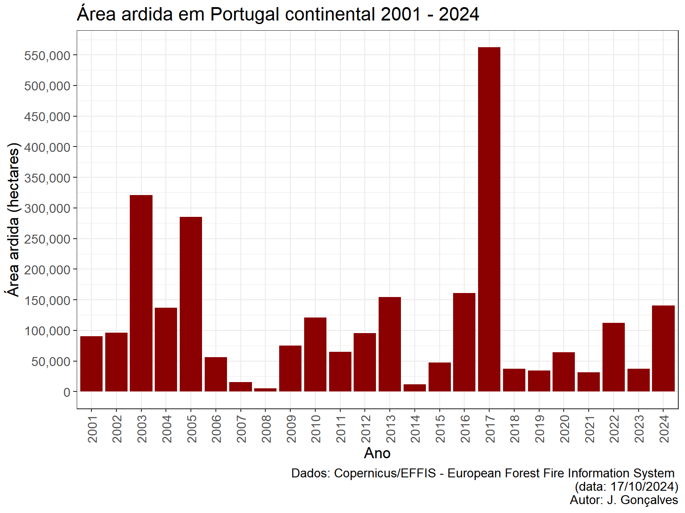
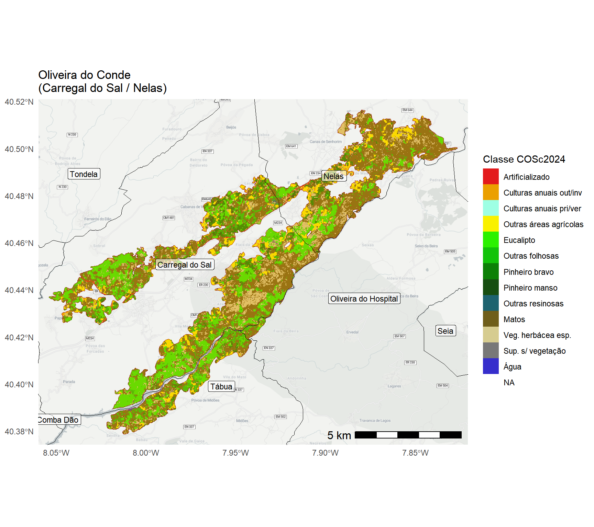
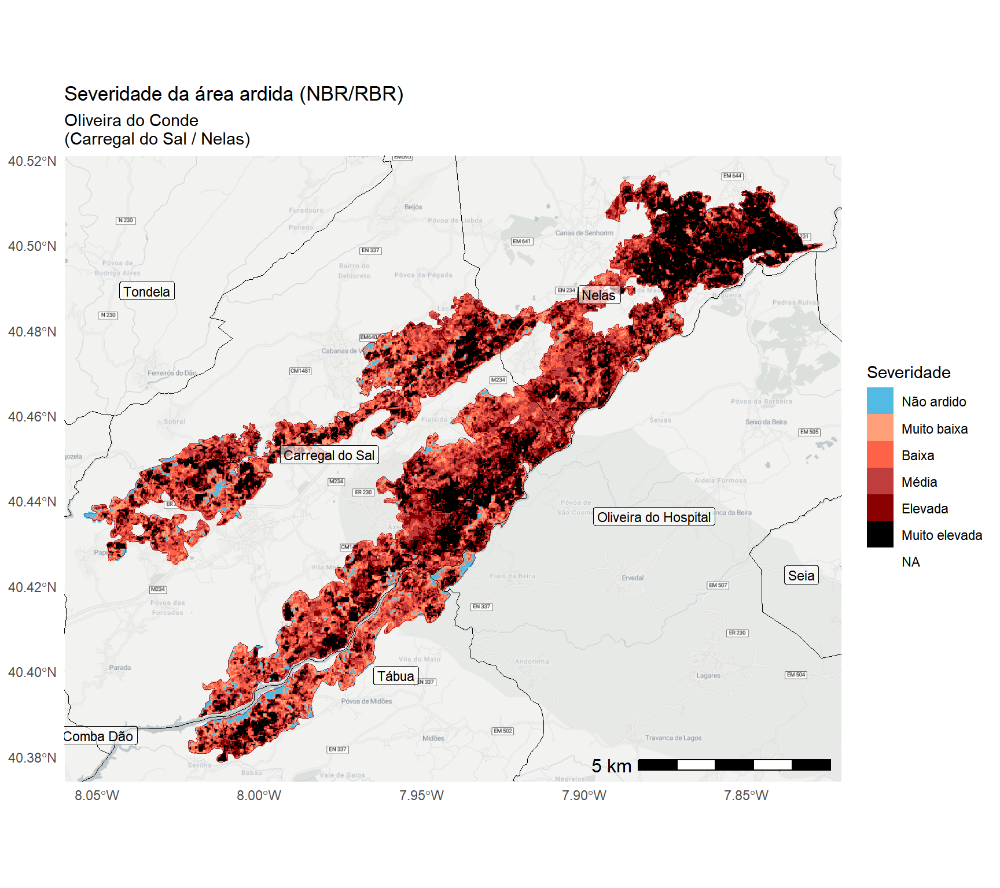
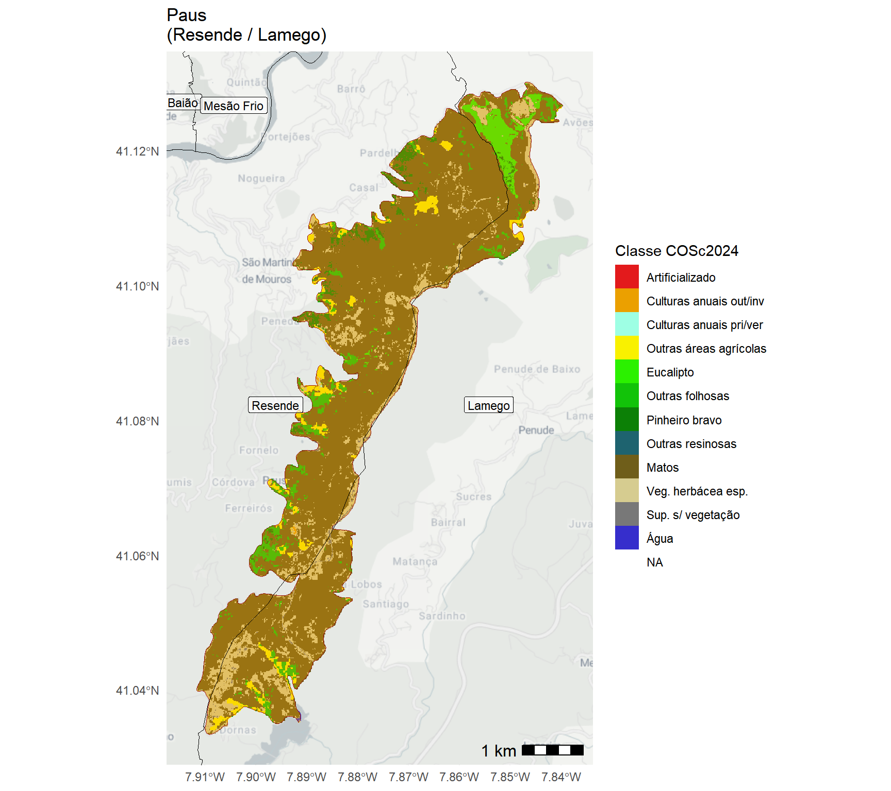
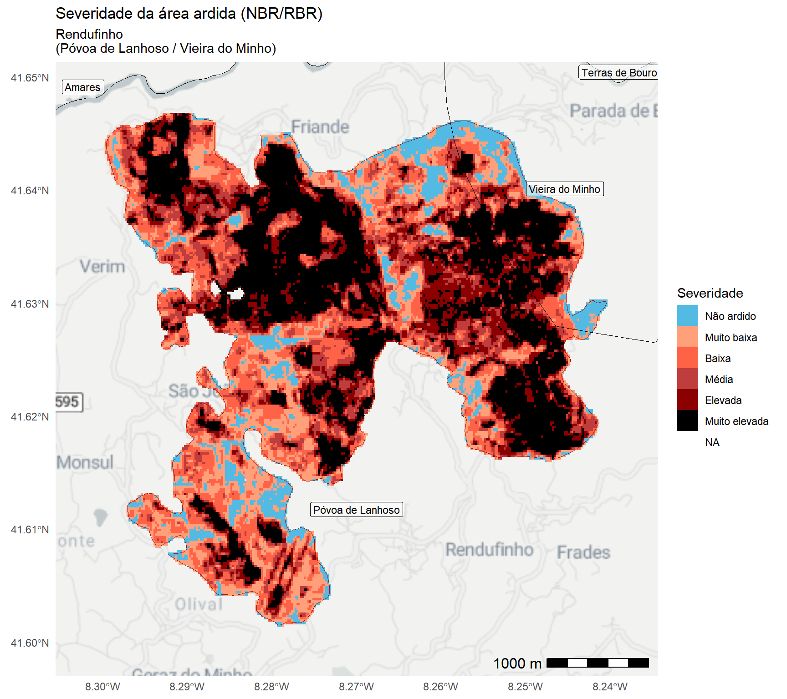
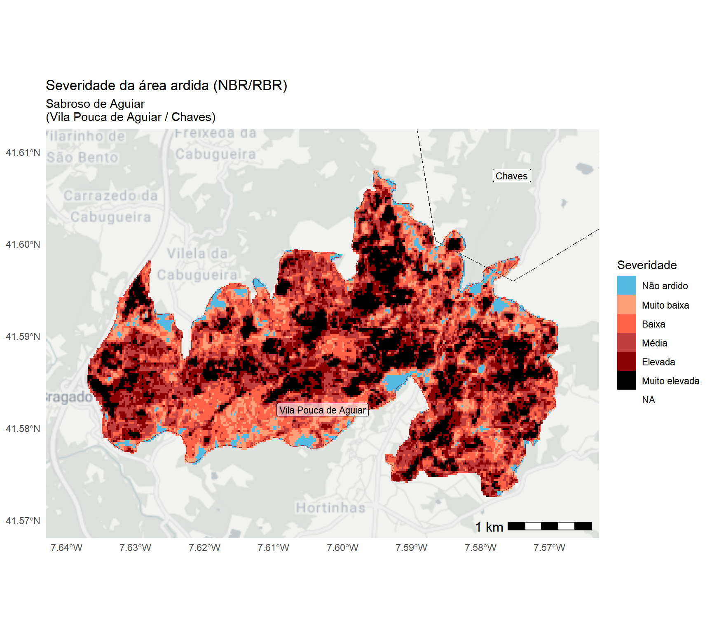
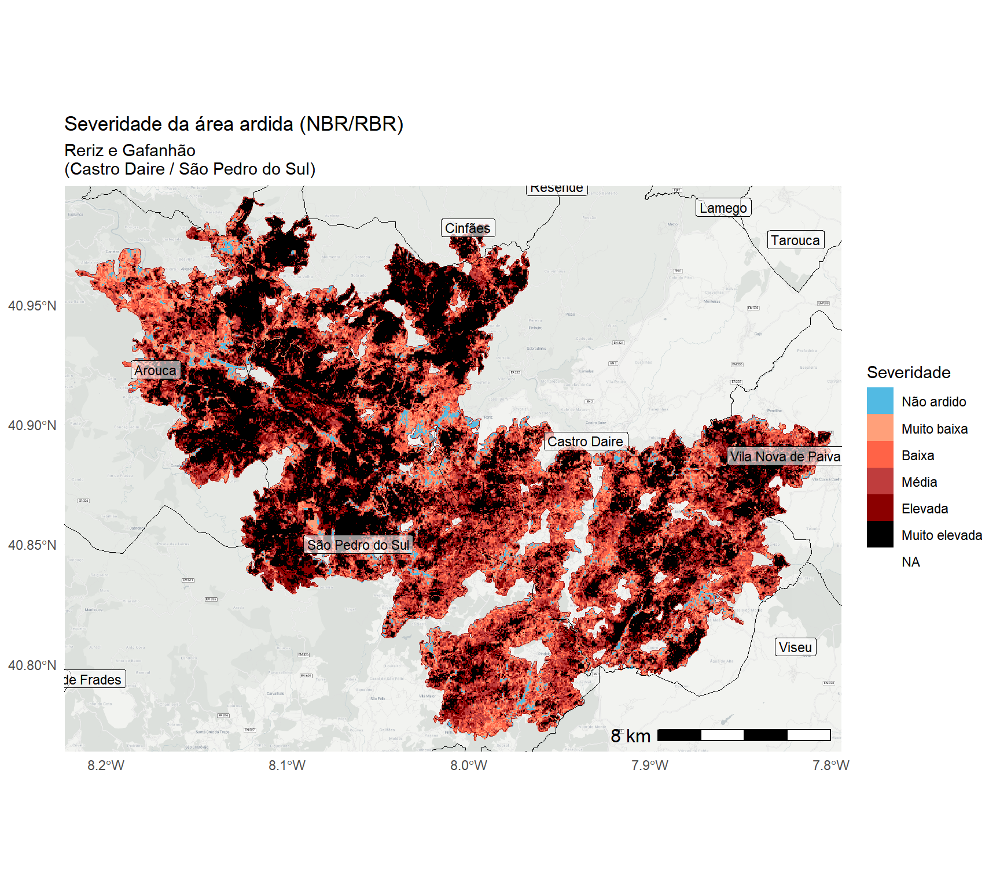

![]()

Aviso / Disclaimer
Esta análise é preliminar e reflete os dados a que os autores tiveram acesso à data de criação deste documento. Esta análise não é definitiva e os valores poderão mudar assim que atualizações e modificações dos dados forem disponibilizadas (por razões diversas e fora do controlo dos autores).
Atualizações deste relatório serão disponibilizadas assim que modificações relevantes dos perímetros de área ardida fornecidos pelo Sistema Europeu Copernicus/EFFIS forem facultados.
As fontes de dados podem estar sujeitas a variações temporais e espaciais, imprecisões ou inexatidões de ordem diversa assim como a erros inerentes aos processos de recolha e processamento de informação completamente alheios aos autores.
Os autores deste relatório não assumem qualquer responsabilidade por decisões ou ações tomadas com base nos dados, análises ou conclusões aqui apresentadas sem a devida consideração das limitações mencionadas.
O uso inadequado ou a interpretação incorreta dos resultados, especialmente sem um conhecimento profundo das incertezas associadas, é da inteira responsabilidade de quem os utiliza. Recomenda-se que os resultados apresentados sejam sempre analisados ou interpretados com cautela, e que, se necessário, sejam complementados por outras fontes de informação e validações adicionais.
Info
Se está a ver este relatório em um smartphone ou tablet, experimente rodar o ecrã para o formato horizontal para aceder ao índice de conteúdos (do lado direito do ecrã)
Este documento usa o ponto (.) como separador decimal e a vírgula como separador de milhares (,)
Código fonte das análises
O código R utilizado para produzir estas análises está disponível no link:
https://github.com/SeverusPT/AnaliseAreaArdida2024
Agradecimentos
Este relatório foi financiado pela Fundação para a Ciência e a Tecnologia (FCT) no âmbito do projeto SeverusPT — “Um serviço e produto de dados baseados na web para a avaliação e previsão de severidade de incêndio em Portugal continental”.
- Website: https://severus.pt/
- DOI: https://doi.org/10.54499/PCIF/RPG/0170/2019
- Referência FCT: PCIF/RPG/0170/2019


1. Material e métodos
1.1. Fontes de dados espaciais/geográficos
Para as análises realizadas neste relatório foram usados os seguintes conjuntos de dados:
Áreas ardidas do Sistema Europeu Copernicus EFFIS (European Forest Fire Information System): link geral | link dados
Carta de Uso e Ocupação do Solo - 2018: link geral | link dados
Carta de Ocupação do Solo Conjuntural - 2024 Pré-Verão DGT: link geral | link dados
Carta Administrativa Oficial de Portugal - CAOP2023 (Continente): link geral | link dados
Rede Nacional de Áreas Protegidas (RNAP)1: link geral | link dados
Zonas de Proteção Especial da Diretiva Aves (ZPE) - RN2000: link geral | link dados
Sítios da Diretiva Habitats (SIC) - RN2000: link geral | link dados
Estradas e vias de trânsito - OpenStreetMaps PT: link geral | link dados
Global ML Building Footprints (área/polígonos de edifícios): link geral-1 | link geral-2 | link dados
Rede Hidrográfica – EU-Hydro River Network Database 2006-2012 (NUTS: PT1): link geral | link dados
Dados Censos 2021 - BGRI: Link geral | link dados
Modelo Digital do Terreno - SRTM 1’’ (NASA; Gonçalves, J.A., Pinhal, A.): link geral | link dados
1.2. Métodos
1.2.1. Análise e visualização de dados
Para a quantificação da área ardida, foram realizadas análises espaciais recorrendo a ferramentas de Sistemas de Informação Geográfica (SIG). Estas análises foram desenvolvidas na plataforma de computação RStudio utilizando a linguagem R, permitindo assim integrar, manipular, visualizar e processar grandes volumes de dados geoespaciais. As ferramentas empregadas para este fim incluíram uma combinação de bibliotecas especializadas no tratamento de dados vetoriais e raster, assim como para a geração de gráficos e tabelas.
Para o geoprocessamento e análise de dados vetoriais, foi utilizado o pacote sf, que facilitou o manuseio e a análise de dados espaciais em formato vetorial. Em complemento, os pacotes terra, tidyterra, raster e fasterize foram usados para o geoprocessamento e análise de dados raster, oferecendo funcionalidades robustas para a manipulação de dados em grande escala.
A visualização de dados geoespaciais foi aprimorada com o pacote ggmap, que permitiu a inclusão de basemaps em formato raster. Além disso, o pacote tidyverse foi utilizado para a manipulação, análise e agregação de dados, permitindo uma estrutura de trabalho eficiente para transformar e analisar os dados espaciais.
Para a renderização de gráficos e mapas, os pacotes ggplot2 e patchwork foram aplicados, proporcionando a criação de visualizações detalhadas e a composição de gráficos e mapas. Finalmente, a formatação e renderização de tabelas foi feita através dos pacotes knitr, kableExtra e flextable, garantindo a apresentação dos resultados tabulares.
Todo o fluxo de trabalho visou garantir a precisão e repetibilidade da análise espacial e estatística dos dados, permitindo uma compreensão abrangente das áreas ardidas e a geração de outputs rigorosos e acessíveis.
1.2.2. Quantificação da área ardida por classe de uso/coberto do solo
Tendo por base os dados de área ardida foi elaborada uma análise relativamente à distribuição dessa em função das categorias de uso/coberto do solo. Para esse efeito recorreu-se a duas bases de dados de referência para Portugal continental:
Carta de Ocupação do Solo Conjuntural para o ano de 2024 (COSc 2024, período pré-verão; Fonte: DGT) e a,
Carta de Uso e Ocupação do Solo (COS 2018, versão 2; Fonte: DGT).
No primeiro conjunto de dados – COSc 2024 – procurou-se a elevada atualidade desta base de dados para efeito da compreensão das categorias mais afetadas pelos incêndios. Enquanto que para a COS 2018 buscou-se uma complementaridade das fontes de informação, assim como maior resolução temática deste conjunto de dados (i.e., maior número de categorias e, portanto, maior grau de discriminação dos tipos de uso/coberto do solo).
1.2.3. Análise da severidade da área ardida
Aviso
Estes são resultados preliminares e ainda incompletos para algumas áreas devido à falta de imagens de satélite ou cobertura parcial de nuvens em algumas regiões.
Acesso/descarregamento dos dados de severidade
Os dados preliminares em formato raster GeoTIFF podem ser descarregados no seguinte link (com metadados): SPT_RBR_NBR_S2MSI_E2024_R003P003_32629_20240930_v02
Estes dados são fornecidos em números inteiros (com parte negativa, mais precisamente, 32-bit signed integer) tendo sido multiplicados por um fator de escala de 10,000. Originalmente os cálculos de severidade são efetuados em números decimais mas, para poupar espaço em disco, é aplicado este fator de reescalaonamento e é feito o arredondamente/truncagem dos valores. Os valores de severidade do indicador NBR/RBR, usualmente estão entre [-6,000; 17,000] (ou seja, na escala decimal original, [-0.6; 1.7], de zonas não ardidas/em recuperação até áreas com extrema severidade).
A severidade da área ardida foi calculada a partir de imagens do satélite ótico Sentinel-2 utilizando o índice espectral Normalized Burn Ratio (NBR), que mede a diferença da reflectância da superfície terrestre entre as bandas do infravermelho próximo (NIR) e do infravermelho médio (SWIR).
\(NBR = \frac{NIR - SWIR}{NIR + SWIR}\)
O NBR é sensível a alterações na vegetação e no solo devidas ao fogo. Para avaliar a severidade do fogo, comparou-se o NBR pré-fogo (NBR pré) com o NBR pós-fogo (NBR pós), utilizando o indicador Relativized Burn Ratio (RBR). Este indicador permite uma quantificação mais robusta das mudanças no terreno, eliminando as variações relativas entre os diferentes tipos de vegetação. A fórmula do RBR é dada por:
\(dNBR = NBR_{pré} - NBR_{pós}\)
\(RBR = \frac{dNBR}{NBR_{pré} + 1.001}\)
Este cálculo foi aplicado em imagens de satélite antes e depois do fogo para produzir mapas de severidade da área ardida.
As classes de severidade para o indicador NBR/RBR foram obtidas através da análise das distribuições para os anos 2018 - 2023 com base nos produtos gerados pelo projeto SeverusPT (para o mesmo satélite e indicador de severidade). A partição das classes foi obtida pelos percentis da distribuição de 20%, 40%… a 80% para os valores de NBR/RBR superiores a zero:
| De | Para | Nível de severidade |
|---|---|---|
| [min] | 0 | Não ardido |
| 0 | 1455 | Muito baixa |
| 1455 | 2750 | Baixa |
| 2750 | 3801 | Média |
| 3801 | 4900 | Elevada |
| 4900 | [max] | Muito elevada |
A escala apresentada na tabela, tal como os dados de severidade, foram multiplicados por um fator de escala de 10,000.
2. Área ardida em Portugal continental (2024)
Síntese geral
À data de 08/10/2024 a área ardida no ano de 2024, de acordo com os dados do Sistema Copernicus/EFFIS (European Forest Fire Information System) é igual a 160,348 hectares. De acordo com esta informação, no mês de setembro arderam 150,662 hectares dos quais 137,372 hectares ocorreram após o dia 15 de setembro de 2024 (inclusive; ou seja, correspondente 85.7% do total anual).
Segundo os dados do EFFIS, foram contabilizados 677 ocorrências de incêndio das quais 174 ocorreram após o dia 15 de setembro (inclusive), correspondente a 25.7% do total anual.
Em termos de afetação potencial de áreas com estatuto de conservação/proteção, um total de 13,342 hectares ocorreram em Rede Nacional de Áreas Protegidas (RNAP), 38,914 hectares em Sítios de Interesse Comunitário da Rede Natura 2000, e 1,477 hectares em Zonas de Proteção Especial também em contexto da Rede Natura 2000.
Em termos de afetação potencial dos cursos de água e, considerando uma estratificação pela hierarquia de Strahler 2, foram quantificados os seguintes impactos em termos de comprimento total por tipo de rio (classes de Strahler de 1 a 6):
- Classe 1: 437.8 km
- Classe 2: 142.5 km
- Classe 3: 74.1 km
- Classe 4: 87.1 km
- Classe 5: 23.8 km
- Classe 6: 0.1 km .
De acordo com dados do Instituto Nacional de Estatística (INE), e considerando as subsecções estatísticas constantes da Base Geográfica de Referenciação de Informação (BGRI) para os Censos de 2021, um total de 138,260 habitantes foram potencialmente afetados pelos incêndios de 2024, como residentes dentro ou nas imediações dos perímetros ardidos, com níveis muito diferenciados de impacto direto ou indireto e que os dados a que tivemos acesso não permitem estimar. Segundo este conjunto de dados também, um total de 85,986 alojamentos poderão ter sido impactados, com graus de afetação direta ou indireta muito diferenciados e que os dados não permitem caracterizar, estando localizados dentro ou nas imediações dos perímetros ardidos.
De acordo com o conjunto de dados aberto de edíficos MS Buildings Footprint, que mistura todas as tipologias de edificado (e.g., habitacional, industrial, serviços), um total de 73,015 edifícios foram potencialmente afetados pelos incêndios de 2024 com níveis muito diferenciados de impacto (que os dados a que tivemos acesso não permitem estimar), estando incluídos dentro dos perímetros de área ardida mapeados pelo sistema EFFIS.
Segundo o conjunto de dados aberto OSM – OpenStreetMap – sobre vias de trânsito/acesso/circulação e, agregando todas as tipologias existentes nesta base de dados (e.g., auto-estradas, estradas nacionais, municipais, caminhos, trilhos), foram potencialmente afetados 7,051 Km de vias.
A distribuição das ocorrências de incêndio por dimensão da área ardida é mostrada na tabela abaixo. Nesta são apresentadas a frequência absoluta e relativa (%) para o ano de 2024. Para efeito de análise mais detalhada, foram separadas as ocorrências na base de dados do EFFIS a partir de 15 de setembro. Neste caso é mostrada a frequência aboluta e relativa (tendo como denominador as ocorrências em cada categoria de dimensão da área ardida).
| Classe | Nr. ocorrências | Percentagem 2024 | Nr. ocorrências após 15 set | Percentagem classe após 15 set |
|---|---|---|---|---|
| 0-10 ha | 388 | 57.3 | 71 | 18.3 |
| 10-100 ha | 212 | 31.3 | 54 | 25.5 |
| 100-250 ha | 28 | 4.1 | 14 | 50.0 |
| 250-500 ha | 16 | 2.4 | 11 | 68.8 |
| 500-1000 ha | 11 | 1.6 | 8 | 72.7 |
| 1000-2500 ha | 12 | 1.8 | 7 | 58.3 |
| 2500-5000 ha | 5 | 0.7 | 4 | 80.0 |
| 5000-10000 ha | 2 | 0.3 | 2 | 100.0 |
| >10000 ha | 3 | 0.4 | 3 | 100.0 |




2.1. Área ardida por classe de uso/coberto do solo
Os resultados desta análise são apresentados nas subsecções seguintes tendo por base os dois conjuntos de dados de uso/ocupação do solo:
- COS conjuntural 2024 (pré-verão), e,
- COS 2018.
2.1.1. Carta de Uso e Ocupação do Solo conjuntural - COSc 2024
| Código | Classe uso/coberto | Área ardida (ha) | % ardida |
|---|---|---|---|
| 410 | Matos | 59455.3 | 37.1 |
| 312 | Eucalipto | 37664.7 | 23.5 |
| 420 | Veg. herbácea esp. | 18654.9 | 11.6 |
| 313 | Outras folhosas | 14088.0 | 8.8 |
| 321 | Pinheiro bravo | 12203.3 | 7.6 |
| 213 | Outras áreas agrícolas | 9535.6 | 6.0 |
| 500 | Sup. s/ vegetação | 3939.0 | 2.5 |
| 100 | Artificializado | 1618.1 | 1.0 |
| 211 | Culturas anuais out/inv | 1249.1 | 0.8 |
| 212 | Culturas anuais pri/ver | 1042.3 | 0.7 |
| 323 | Outras resinosas | 297.8 | 0.2 |
| 311 | Sobreiro e azinheira | 203.4 | 0.1 |
| 620 | Água | 144.0 | 0.1 |
| 322 | Pinheiro manso | 103.2 | 0.1 |
| 610 | Zonas húmidas | 21.0 | 0.0 |

2.1.2. Carta de Ocupação do Solo - COS 2018
| Classe uso/coberto | Área ardida (ha) | % ardida |
|---|---|---|
| Matos | 45181.3 | 28.2 |
| Florestas de eucalipto | 42594.8 | 26.5 |
| Florestas de pinheiro bravo | 30513.4 | 19.0 |
| Florestas de outras folhosas | 8511.5 | 5.3 |
| Culturas temporárias de sequeiro e regadio | 8302.0 | 5.2 |
| Florestas de outros carvalhos | 6237.1 | 3.9 |
| Mosaicos culturais e parcelares complexos | 3024.3 | 1.9 |
| Agricultura com espaços naturais e seminaturais | 2436.5 | 1.5 |
| Vegetação esparsa | 2240.7 | 1.4 |

3. Área ardida por município
Nesta secção do relatório, apresentamos uma análise detalhada das áreas ardidas no ano de 2024, com enfoque nos municípios de Portugal continental. O objetivo desta análise é avaliar a distribuição das áreas afetadas pelos incêndios em cada município.
| Município | Área ardida 2024 (hectares) | % área do concelho |
|---|---|---|
| Castro Daire | 19999.5 | 52.8 |
| São Pedro do Sul | 13984.8 | 40.1 |
| Albergaria-a-Velha | 9793.4 | 61.7 |
| Águeda | 9149.6 | 27.3 |
| Baião | 6871.1 | 39.4 |
| Arouca | 6729.0 | 20.4 |
| Penalva do Castelo | 5843.4 | 43.5 |
| Sever do Vouga | 5702.6 | 43.9 |
| Vila Pouca de Aguiar | 5661.3 | 13.0 |
| Mangualde | 5281.7 | 24.1 |
| Carregal do Sal | 4521.8 | 38.7 |
| Cinfães | 4390.4 | 18.3 |
| Cabeceiras de Basto | 4346.8 | 18.0 |
| Amarante | 4213.5 | 14.0 |
| Marco de Canaveses | 3896.5 | 19.3 |
| Fafe | 3160.0 | 14.4 |
| Gondomar | 3027.4 | 22.9 |
| Nelas | 2934.3 | 23.3 |
| Arcos de Valdevez | 2681.9 | 6.0 |
| Resende | 2538.5 | 20.6 |
| Oliveira de Azeméis | 2220.1 | 13.8 |
| Póvoa de Lanhoso | 2200.9 | 16.3 |
| Celorico de Basto | 2078.8 | 11.5 |
| Chaves | 2011.7 | 3.4 |
| Penafiel | 1892.5 | 8.9 |
| Paredes | 1707.5 | 10.9 |
| Miranda do Douro | 1631.0 | 3.3 |
| Vila Nova de Paiva | 1611.0 | 9.2 |
| Vila Real | 1235.4 | 3.3 |
| Fundão | 1052.3 | 1.5 |
| Ribeira de Pena | 1005.6 | 4.6 |
| Guimarães | 995.2 | 4.1 |
| Vinhais | 944.4 | 1.4 |
| Tábua | 873.9 | 4.4 |
| Valença | 691.2 | 5.9 |
| Lamego | 660.3 | 4.0 |
| Sesimbra | 620.4 | 3.2 |
| Felgueiras | 605.7 | 5.2 |
| Peso da Régua | 590.3 | 6.2 |
| Melgaço | 574.2 | 2.4 |
| Vale de Cambra | 570.9 | 3.9 |
| Vimioso | 537.8 | 1.1 |
| Vieira do Minho | 505.7 | 2.3 |
| Bragança | 479.6 | 0.4 |
| Vila Verde | 473.1 | 2.1 |
| Santo Tirso | 467.3 | 3.4 |
| Oliveira do Hospital | 447.6 | 1.9 |
| Montalegre | 411.0 | 0.5 |
| Ponte da Barca | 400.9 | 2.2 |
| Castelo Branco | 391.6 | 0.3 |
| Arganil | 323.3 | 1.0 |
| Alijó | 319.8 | 1.1 |
| Paços de Ferreira | 311.1 | 4.4 |
| Terras de Bouro | 310.2 | 1.1 |
| Seixal | 246.4 | 2.6 |
| Ponte de Lima | 236.3 | 0.7 |
| Sátão | 232.1 | 1.1 |
| Freixo de Espada à Cinta | 227.9 | 0.9 |
| Mirandela | 197.5 | 0.3 |
| Aveiro | 175.5 | 0.9 |
| Celorico da Beira | 165.4 | 0.7 |
| Fornos de Algodres | 162.0 | 1.2 |
| São João da Pesqueira | 161.7 | 0.6 |
| Lousada | 156.9 | 1.6 |
| Portalegre | 147.3 | 0.3 |
| Viana do Castelo | 145.5 | 0.5 |
| Seia | 141.4 | 0.3 |
| Ourém | 133.0 | 0.3 |
| Viseu | 115.6 | 0.2 |
| Braga | 113.5 | 0.6 |
| Coimbra | 108.1 | 0.3 |
| Vila Nova de Famalicão | 107.3 | 0.5 |
| Paredes de Coura | 99.1 | 0.7 |
| Pombal | 98.9 | 0.2 |
| Cascais | 94.8 | 1.0 |
| Barcelos | 93.5 | 0.2 |
| Vila Flor | 85.7 | 0.3 |
| Aguiar da Beira | 77.7 | 0.4 |
| Gouveia | 65.8 | 0.2 |
| Tabuaço | 61.9 | 0.5 |
| Boticas | 58.8 | 0.2 |
| Alcácer do Sal | 55.0 | 0.0 |


4. Área ardida em espaços de proteção/conservação
Nesta secção apresenta-se uma análise da área ardida em espaços de proteção e conservação em Portugal continental, abordando as diferentes redes e áreas de interesse. Esta análise está subdividida em três partes principais:
A primeira subsecção (4.1) incidirá sobre a Rede Nacional de Áreas Protegidas (RNAP), explorando a extensão dos incêndios em territórios que possuem um elevado valor ecológico, património natural e biodiversidade;
Na subsecção (4.2), será analisada a área ardida nos Sítios de Interesse Comunitário (SIC), integrados na Rede Natura 2000, com especial enfoque nos impactos sobre os habitats naturais protegidos;
Por fim, a subsecção (4.3) examinará as Zonas de Proteção Especial (ZPE), também parte da Rede Natura 2000, discutindo as áreas afetadas em locais designados para a conservação de aves e outras espécies prioritárias.
Esta análise visa avaliar os impactos dos incêndios nas áreas de maior relevância em termos de património natural com vista a suportar potenciais medidas de recuperação e prevenção nesses espaços.
4.1. Rede Nacional de Áreas Protegidas (RNAP)
| Sigla | Nome AP | Área ardida (ha) | % AP ardida |
|---|---|---|---|
| PPRSA | Serra da Aboboreira | 9434.4 | 46.4 |
| PPRPSP | Parque das Serras do Porto | 2315.5 | 38.8 |
| PNPG | Peneda-Gerês | 641.2 | 0.9 |
| PNM | Montesinho | 474.7 | 0.6 |
| PNDI | Douro Internacional | 227.9 | 0.3 |
| PNSE | Serra da Estrela | 98.8 | 0.1 |
| PNSC | Sintra-Cascais | 94.8 | 0.7 |
| PNRVT | Vale do Tua | 31.5 | 0.1 |
| PNAL | Alvão | 9.6 | 0.1 |
| PPLSSA | Serras do Socorro e Archeira | 7.6 | 0.6 |
| PNSAC | Serras de Aire e Candeeiros | 5.5 | 0.0 |
| RNDSJ | Dunas de São Jacinto | 0.5 | 0.1 |
4.1.1. Área ardida na RNAP por classe de uso/ocupação do solo (COSc 2024)
| Cod. | Nome | Matos | Veg. herbácea esp. | Sup. s/ vegetação | Eucalipto | Outras folhosas | Pinheiro bravo | Pinheiro manso | Outras resinosas | Culturas anuais out/inv | Culturas anuais pri/ver | Outras áreas agrícolas | Artificializado | Água |
|---|---|---|---|---|---|---|---|---|---|---|---|---|---|---|
| PPRSA | Serra da Aboboreira | 4695.8 | 1089.5 | 197.9 | 672.5 | 1855.1 | 325.2 | 0 | 27.0 | 68.1 | 167.7 | 366.2 | 44.5 | 0 |
| PPRPSP | Parque das Serras do Porto | 300.5 | 251.1 | 194.3 | 1429.4 | 73.9 | 17.4 | 0 | 0.0 | 9.9 | 7.6 | 22.8 | 19.8 | 0 |
| PNPG | Peneda-Gerês | 485.3 | 163.2 | 7.1 | 0.0 | 7.9 | 2.3 | 0 | 5.1 | 0.0 | 0.0 | 0.2 | 0.0 | 0 |
| PNM | Montesinho | 388.0 | 35.3 | 22.4 | 0.0 | 21.0 | 11.3 | 0 | 2.5 | 0.0 | 0.0 | 4.4 | 0.3 | 0 |
| PNDI | Douro Internacional | 88.2 | 114.0 | 2.3 | 0.2 | 7.0 | 0.8 | 0 | 0.0 | 0.0 | 0.0 | 21.6 | 0.0 | 0 |
| PNSE | Serra da Estrela | 50.8 | 40.4 | 11.9 | 0.8 | 1.9 | 0.3 | 0 | 0.0 | 0.1 | 0.0 | 0.2 | 0.0 | 0 |
| PNSC | Sintra-Cascais | 71.6 | 6.0 | 0.8 | 2.3 | 0.6 | 11.8 | 2 | 0.1 | 0.3 | 0.0 | 1.2 | 2.0 | 0 |
| PNRVT | Vale do Tua | 17.3 | 2.3 | 0.1 | 0.0 | 1.4 | 5.6 | 0 | 0.0 | 0.0 | 0.0 | 7.3 | 0.0 | 0 |
| PNAL | Alvão | 2.5 | 8.3 | 0.1 | 0.0 | 0.0 | 0.0 | 0 | 0.0 | 0.0 | 0.0 | 0.0 | 0.0 | 0 |
| PPLSSA | Serras do Socorro e Archeira | 3.3 | 4.9 | 0.2 | 0.1 | 0.1 | 0.0 | 0 | 0.0 | 0.0 | 0.0 | 0.0 | 0.0 | 0 |
| PNSAC | Serras de Aire e Candeeiros | 6.4 | 0.2 | 0.0 | 0.1 | 0.0 | 0.3 | 0 | 0.0 | 0.0 | 0.0 | 0.0 | 0.0 | 0 |
4.1.2. Área ardida na RNAP por classe de uso/ocupação do solo (COS 2018)
| Cod. | Nome | Matos | Vegetação esparsa | Florestas de eucalipto | Florestas de pinheiro bravo | Florestas de outros carvalhos | Florestas de outras folhosas | Florestas de espécies invasoras | Florestas de outras resinosas | Florestas de castanheiro | Olivais | Pomares | Vinhas | Culturas temporárias de sequeiro e regadio | Agricultura com espaços naturais e seminaturais | Pastagens melhoradas | Pastagens espontâneas | Mosaicos culturais e parcelares complexos | Agricultura protegida e viveiros | Tecido edificado contínuo predominantemente horizontal | Tecido edificado contínuo predominantemente vertical | Tecido edificado descontínuo | Tecido edificado descontínuo esparso | Áreas em construção | Outros equipamentos e instalações turísticas | Instalações desportivas | Rede viária e espaços associados | Indústria | Cursos de água naturais |
|---|---|---|---|---|---|---|---|---|---|---|---|---|---|---|---|---|---|---|---|---|---|---|---|---|---|---|---|---|---|
| PPRSA | Serra da Aboboreira | 4564.6 | 127.5 | 740.4 | 579.5 | 1458.9 | 765.6 | 4.7 | 4.7 | 24.9 | 0.7 | 28.3 | 42.7 | 742.6 | 101.6 | 57.0 | 0.0 | 28.1 | 6.5 | 15.7 | 0.8 | 72.9 | 49.4 | 1.3 | 0.0 | 3.8 | 11.6 | 0.5 | 0.0 |
| PPRPSP | Parque das Serras do Porto | 289.4 | 0.0 | 1804.4 | 59.8 | 0.6 | 51.9 | 0.0 | 0.0 | 0.0 | 0.0 | 1.3 | 2.8 | 59.2 | 3.6 | 0.0 | 0.0 | 0.4 | 0.0 | 0.0 | 0.0 | 4.9 | 15.0 | 0.0 | 0.0 | 0.0 | 21.1 | 0.0 | 1.0 |
| PNPG | Peneda-Gerês | 385.0 | 184.5 | 0.0 | 38.4 | 13.3 | 4.3 | 0.0 | 14.5 | 0.0 | 0.0 | 0.0 | 0.0 | 0.0 | 0.0 | 0.3 | 0.0 | 0.0 | 0.0 | 0.0 | 0.0 | 0.0 | 0.0 | 0.0 | 0.0 | 0.0 | 0.0 | 0.0 | 0.9 |
| PNM | Montesinho | 444.8 | 0.0 | 0.0 | 3.4 | 2.2 | 4.7 | 0.0 | 10.5 | 3.2 | 0.0 | 2.2 | 0.0 | 0.0 | 3.0 | 0.0 | 0.0 | 0.0 | 0.0 | 0.0 | 0.0 | 0.0 | 0.0 | 0.0 | 0.7 | 0.0 | 0.0 | 0.0 | 0.0 |
| PNDI | Douro Internacional | 182.5 | 0.0 | 0.0 | 0.0 | 2.1 | 16.0 | 0.0 | 0.0 | 0.0 | 25.2 | 0.8 | 1.3 | 0.0 | 0.0 | 0.0 | 0.0 | 0.0 | 0.0 | 0.0 | 0.0 | 0.0 | 0.0 | 0.0 | 0.0 | 0.0 | 0.0 | 0.0 | 0.0 |
| PNSE | Serra da Estrela | 96.7 | 0.0 | 0.0 | 0.0 | 0.0 | 0.0 | 0.0 | 0.0 | 0.0 | 0.0 | 0.1 | 0.0 | 1.3 | 0.0 | 0.0 | 0.0 | 0.8 | 0.0 | 0.0 | 0.0 | 0.0 | 0.0 | 0.0 | 0.0 | 0.0 | 0.0 | 0.0 | 0.0 |
| PNSC | Sintra-Cascais | 74.8 | 0.0 | 0.0 | 15.0 | 0.0 | 0.9 | 0.0 | 0.1 | 0.0 | 0.1 | 0.0 | 0.0 | 0.3 | 0.0 | 0.0 | 0.0 | 0.0 | 0.0 | 0.0 | 0.0 | 3.0 | 0.0 | 0.6 | 0.0 | 0.1 | 0.0 | 0.0 | 0.0 |
| PNRVT | Vale do Tua | 8.0 | 0.0 | 0.0 | 12.7 | 0.0 | 0.0 | 0.0 | 0.0 | 0.0 | 9.3 | 0.0 | 1.4 | 0.0 | 0.0 | 0.0 | 0.0 | 0.0 | 0.0 | 0.0 | 0.0 | 0.0 | 0.0 | 0.0 | 0.0 | 0.0 | 0.0 | 0.0 | 0.0 |
| PNAL | Alvão | 3.7 | 5.9 | 0.0 | 0.0 | 0.0 | 0.0 | 0.0 | 0.0 | 0.0 | 0.0 | 0.0 | 0.0 | 0.0 | 0.0 | 0.0 | 0.0 | 0.0 | 0.0 | 0.0 | 0.0 | 0.0 | 0.0 | 0.0 | 0.0 | 0.0 | 0.0 | 0.0 | 0.0 |
| PPLSSA | Serras do Socorro e Archeira | 7.4 | 0.0 | 0.0 | 0.0 | 0.0 | 0.0 | 0.0 | 0.0 | 0.0 | 0.0 | 0.0 | 0.0 | 0.0 | 0.0 | 0.0 | 0.2 | 0.0 | 0.0 | 0.0 | 0.0 | 0.0 | 0.0 | 0.0 | 0.0 | 0.0 | 0.0 | 0.0 | 0.0 |
| PNSAC | Serras de Aire e Candeeiros | 2.3 | 0.0 | 0.0 | 3.2 | 0.0 | 0.0 | 0.0 | 0.0 | 0.0 | 0.0 | 0.0 | 0.0 | 0.0 | 0.0 | 0.0 | 0.0 | 0.0 | 0.0 | 0.0 | 0.0 | 0.0 | 0.0 | 0.0 | 0.0 | 0.0 | 0.0 | 0.0 | 0.0 |
4.1.3. Área ardida na RNAP por classe de severidade
Aviso
Estes são resultados preliminares e ainda incompletos para algumas áreas devido à falta de imagens de satélite ou cobertura parcial de nuvens em algumas regiões.
| Cod. | Nome | Não ardido | Muito baixa | Baixa | Média | Elevada | Muito elevada |
|---|---|---|---|---|---|---|---|
| PPRSA | Serra da Aboboreira | 954.9 | 1282.4 | 1275.0 | 1002.3 | 1217.1 | 3826.8 |
| PPRPSP | Parque das Serras do Porto | 135.8 | 307.7 | 471.8 | 442.5 | 425.2 | 550.0 |
| PNPG | Peneda-Gerês | 6.1 | 65.8 | 58.1 | 58.9 | 75.4 | 359.5 |
| PNM | Montesinho | 6.9 | 37.4 | 35.7 | 57.0 | 118.7 | 225.1 |
| PNDI | Douro Internacional | 3.3 | 15.5 | 22.3 | 21.1 | 42.0 | 135.3 |
| PNSC | Sintra-Cascais | 0.8 | 13.0 | 9.9 | 8.7 | 16.4 | 53.1 |
| PNSE | Serra da Estrela | 4.3 | 9.4 | 14.1 | 23.2 | 27.0 | 16.6 |
| PNRVT | Vale do Tua | 0.4 | 5.9 | 7.4 | 7.4 | 8.5 | 6.3 |
4.2. Rede Natura 2000 - Sítios de Interesse Comunitário (SIC)
| Código SIC | Nome SIC | Área ardida (ha) | % sítio ardido |
|---|---|---|---|
| PTCON0025 | Montemuro | 10600.3 | 27.3 |
| PTCON0047 | Serras da Freita e Arada | 7930.1 | 27.7 |
| PTCON0003 | Alvão/Marão | 6951.4 | 11.8 |
| PTCON0059 | Rio Paiva | 6797.1 | 46.9 |
| PTCON0026 | Rio Vouga | 2119.9 | 75.8 |
| PTCON0027 | Carregal do Sal | 1523.6 | 16.1 |
| PTCON0001 | Peneda-Gerês | 1188.0 | 1.3 |
| PTCON0054 | Fernão Ferro/Lagoa de Albufeira | 846.6 | 19.6 |
| PTCON0002 | Montesinho/Nogueira | 486.8 | 0.5 |
| PTCON0039 | Serra d'Arga | 105.0 | 2.3 |
| PTCON0014 | Serra da Estrela | 98.8 | 0.1 |
| PTCON0008 | Sintra/Cascais | 94.8 | 0.6 |
| PTCON0053 | Moura/Barrancos | 45.9 | 0.1 |
| PTCON0061 | Ria de Aveiro | 29.5 | 0.1 |
| PTCON0060 | Serra da Lousã | 28.5 | 0.2 |
| PTCON0021 | Rios Sabor e Maçãs | 19.2 | 0.1 |
| PTCON0024 | Valongo | 17.2 | 0.7 |
| PTCON0015 | Serras de Aire e Candeeiros | 16.0 | 0.0 |
| PTCON0040 | Corno do Bico | 7.7 | 0.1 |
| PTCON0007 | São Mamede | 2.8 | 0.0 |
| PTCON0022 | Douro Internacional | 2.3 | 0.0 |
| PTCON0020 | Rio Lima | 1.9 | 0.0 |
| PTCON0037 | Monchique | 0.8 | 0.0 |
4.2.1. Área ardida nos SICs por classe de uso/ocupação do solo (COSc 2024)
| Cod. | Nome | Matos | Veg. herbácea esp. | Sup. s/ vegetação | Eucalipto | Outras folhosas | Sobreiro e azinheira | Pinheiro bravo | Pinheiro manso | Outras resinosas | Culturas anuais out/inv | Culturas anuais pri/ver | Outras áreas agrícolas | Artificializado | Zonas húmidas | Água |
|---|---|---|---|---|---|---|---|---|---|---|---|---|---|---|---|---|
| PTCON0025 | Montemuro | 6546.2 | 1552.2 | 92.6 | 690.1 | 781.6 | 0.0 | 358.8 | 0.8 | 2.0 | 32.8 | 18.2 | 529.2 | 21.4 | 0.0 | 1.8 |
| PTCON0047 | Serras da Freita e Arada | 5529.0 | 899.5 | 149.7 | 809.8 | 305.5 | 0.0 | 132.8 | 2.0 | 1.1 | 3.4 | 10.6 | 109.6 | 6.1 | 0.0 | 0.2 |
| PTCON0003 | Alvão/Marão | 3362.0 | 2031.9 | 680.1 | 5.9 | 427.0 | 4.3 | 76.9 | 0.0 | 160.4 | 21.0 | 53.0 | 143.9 | 39.6 | 0.0 | 0.2 |
| PTCON0059 | Rio Paiva | 2500.4 | 333.8 | 40.7 | 1958.4 | 905.9 | 0.0 | 650.8 | 3.0 | 1.3 | 28.9 | 23.6 | 322.8 | 31.6 | 0.0 | 10.5 |
| PTCON0026 | Rio Vouga | 291.2 | 120.9 | 34.8 | 1191.4 | 152.5 | 0.0 | 112.7 | 4.0 | 0.2 | 8.9 | 47.9 | 99.4 | 41.5 | 1.1 | 22.7 |
| PTCON0027 | Carregal do Sal | 713.5 | 247.8 | 9.6 | 276.6 | 100.2 | 0.0 | 61.2 | 3.1 | 0.3 | 4.1 | 0.2 | 105.3 | 2.6 | 0.0 | 6.5 |
| PTCON0001 | Peneda-Gerês | 966.8 | 241.2 | 9.9 | 5.8 | 28.0 | 0.0 | 3.8 | 0.0 | 5.6 | 0.0 | 0.1 | 1.4 | 0.0 | 0.0 | 0.0 |
| PTCON0054 | Fernão Ferro/Lagoa de Albufeira | 112.3 | 235.5 | 34.8 | 1.4 | 0.1 | 0.0 | 436.1 | 21.4 | 0.0 | 1.1 | 0.0 | 0.1 | 0.0 | 13.6 | 2.4 |
| PTCON0002 | Montesinho/Nogueira | 398.5 | 35.9 | 22.4 | 0.0 | 21.8 | 0.0 | 13.0 | 0.0 | 2.5 | 0.0 | 0.0 | 4.4 | 0.3 | 0.0 | 0.0 |
| PTCON0039 | Serra d'Arga | 70.7 | 40.6 | 0.3 | 0.0 | 0.0 | 0.0 | 0.0 | 0.0 | 0.0 | 0.0 | 0.0 | 0.0 | 0.0 | 0.0 | 0.0 |
| PTCON0014 | Serra da Estrela | 50.8 | 40.4 | 11.9 | 0.8 | 1.9 | 0.0 | 0.3 | 0.0 | 0.0 | 0.1 | 0.0 | 0.2 | 0.0 | 0.0 | 0.0 |
| PTCON0008 | Sintra/Cascais | 71.6 | 6.0 | 0.8 | 2.3 | 0.6 | 0.0 | 11.8 | 2.0 | 0.1 | 0.3 | 0.0 | 1.2 | 2.0 | 0.0 | 0.0 |
| PTCON0053 | Moura/Barrancos | 1.4 | 27.8 | 1.0 | 0.0 | 0.0 | 13.3 | 0.0 | 0.0 | 0.0 | 0.0 | 0.0 | 4.6 | 0.0 | 0.0 | 0.4 |
| PTCON0061 | Ria de Aveiro | 1.5 | 7.7 | 0.4 | 3.0 | 4.2 | 0.0 | 1.1 | 0.0 | 0.0 | 5.6 | 6.5 | 1.6 | 0.2 | 0.0 | 0.6 |
| PTCON0060 | Serra da Lousã | 2.2 | 24.5 | 5.2 | 0.0 | 0.3 | 0.0 | 0.0 | 0.0 | 0.1 | 0.0 | 0.0 | 0.0 | 0.0 | 0.0 | 0.0 |
| PTCON0021 | Rios Sabor e Maçãs | 8.4 | 8.4 | 3.2 | 0.0 | 0.1 | 0.0 | 0.0 | 0.0 | 0.0 | 0.0 | 0.0 | 0.3 | 0.0 | 0.0 | 0.0 |
| PTCON0024 | Valongo | 5.1 | 1.8 | 2.4 | 4.9 | 3.9 | 0.0 | 1.2 | 0.0 | 0.0 | 0.0 | 0.0 | 0.4 | 0.0 | 0.0 | 0.0 |
| PTCON0015 | Serras de Aire e Candeeiros | 17.3 | 0.4 | 0.1 | 0.2 | 0.2 | 0.0 | 0.3 | 0.0 | 0.0 | 0.0 | 0.0 | 0.0 | 0.0 | 0.0 | 0.0 |
| PTCON0040 | Corno do Bico | 8.2 | 0.0 | 0.0 | 0.0 | 0.5 | 0.0 | 0.0 | 0.0 | 0.0 | 0.0 | 0.0 | 0.0 | 0.0 | 0.0 | 0.0 |
| PTCON0007 | São Mamede | 0.3 | 2.8 | 0.1 | 0.0 | 0.0 | 0.0 | 0.0 | 0.0 | 0.0 | 0.0 | 0.0 | 0.0 | 0.0 | 0.0 | 0.0 |
| PTCON0022 | Douro Internacional | 0.3 | 0.1 | 0.0 | 0.0 | 0.0 | 0.0 | 0.0 | 0.0 | 0.0 | 0.0 | 0.0 | 2.4 | 0.0 | 0.0 | 0.0 |
| PTCON0020 | Rio Lima | 0.0 | 0.0 | 0.0 | 0.9 | 0.1 | 0.0 | 1.3 | 0.0 | 0.0 | 0.0 | 0.0 | 0.0 | 0.0 | 0.0 | 0.0 |
| PTCON0037 | Monchique | 0.5 | 0.0 | 0.0 | 0.5 | 0.0 | 0.0 | 0.0 | 0.0 | 0.0 | 0.0 | 0.0 | 0.0 | 0.0 | 0.0 | 0.0 |
4.2.2. Área ardida nos SICs por classe de uso/ocupação do solo (COS 2018)
| Cod. | Nome | Matos | Vegetação esparsa | Rocha nua | Florestas de eucalipto | Florestas de pinheiro bravo | Florestas de sobreiro | Florestas de azinheira | Florestas de outros carvalhos | Florestas de outras folhosas | Florestas de espécies invasoras | Florestas de pinheiro manso | Florestas de outras resinosas | Florestas de castanheiro | SAF de azinheira | SAF de outras misturas | Olivais | Pomares | Vinhas | Culturas temporárias de sequeiro e regadio | Culturas temporárias e/ou pastagens melhoradas associadas a olival | Culturas temporárias e/ou pastagens melhoradas associadas a vinha | Agricultura com espaços naturais e seminaturais | Pastagens melhoradas | Pastagens espontâneas | Mosaicos culturais e parcelares complexos | Tecido edificado contínuo predominantemente horizontal | Tecido edificado descontínuo | Tecido edificado descontínuo esparso | Áreas em construção | Espaços vazios sem construção | Outros equipamentos e instalações turísticas | Instalações desportivas | Instalações agrícolas | Infraestruturas de produção de energia renovável | Rede viária e espaços associados | Rede ferroviária e espaços associados | Indústria | Pedreiras | Cursos de água naturais | Lagos e lagoas interiores artificiais | Albufeiras de barragens | Charcas | Pauis | Equipamentos culturais |
|---|---|---|---|---|---|---|---|---|---|---|---|---|---|---|---|---|---|---|---|---|---|---|---|---|---|---|---|---|---|---|---|---|---|---|---|---|---|---|---|---|---|---|---|---|---|
| PTCON0025 | Montemuro | 6851.8 | 204.9 | 2.8 | 705.3 | 875.2 | 0.0 | 0.0 | 579.2 | 178.6 | 0.0 | 0.0 | 7.4 | 49.2 | 0.0 | 0.0 | 5.4 | 79.3 | 15.8 | 580.6 | 0.9 | 8.9 | 229.6 | 68.2 | 63.0 | 21.3 | 10.4 | 49.2 | 9.8 | 0.0 | 0 | 0.0 | 1.2 | 0.0 | 0.0 | 0.0 | 0.0 | 0.0 | 0.0 | 0.0 | 0.0 | 2.4 | 0.0 | 0.0 | 0.0 |
| PTCON0047 | Serras da Freita e Arada | 5146.3 | 155.7 | 5.3 | 848.2 | 1010.3 | 6.1 | 24.2 | 187.4 | 286.5 | 1.5 | 0.0 | 0.0 | 3.7 | 0.0 | 0.0 | 0.0 | 0.0 | 0.0 | 116.0 | 0.0 | 0.0 | 99.2 | 1.1 | 0.0 | 0.1 | 17.0 | 13.9 | 0.0 | 0.0 | 0 | 0.0 | 0.0 | 0.0 | 1.3 | 0.0 | 0.0 | 0.0 | 0.0 | 0.0 | 0.0 | 0.0 | 0.0 | 0.0 | 6.4 |
| PTCON0003 | Alvão/Marão | 4082.9 | 812.8 | 66.5 | 4.1 | 335.2 | 5.4 | 0.0 | 503.3 | 112.7 | 0.0 | 0.0 | 516.4 | 0.0 | 0.0 | 0.0 | 0.0 | 4.9 | 0.0 | 173.1 | 0.0 | 0.0 | 27.4 | 130.1 | 0.0 | 0.0 | 26.6 | 10.6 | 0.1 | 0.0 | 0 | 0.0 | 0.0 | 0.0 | 0.0 | 67.3 | 0.0 | 2.2 | 69.7 | 0.0 | 0.0 | 0.0 | 0.0 | 0.0 | 0.0 |
| PTCON0059 | Rio Paiva | 1464.4 | 26.7 | 0.0 | 2051.1 | 1629.7 | 8.8 | 0.0 | 197.2 | 573.8 | 8.5 | 0.0 | 0.0 | 12.3 | 0.0 | 0.0 | 29.5 | 37.9 | 2.6 | 337.1 | 0.0 | 0.0 | 158.9 | 9.4 | 19.4 | 31.4 | 10.6 | 49.6 | 24.0 | 0.0 | 0 | 0.0 | 0.0 | 0.0 | 0.0 | 12.0 | 0.0 | 6.2 | 4.5 | 91.8 | 0.0 | 0.0 | 0.0 | 0.0 | 0.0 |
| PTCON0026 | Rio Vouga | 39.1 | 0.0 | 0.0 | 1372.0 | 188.3 | 0.0 | 0.0 | 1.1 | 148.8 | 17.0 | 0.0 | 0.0 | 0.0 | 0.0 | 0.0 | 0.0 | 9.9 | 7.5 | 112.5 | 0.0 | 3.2 | 11.6 | 0.0 | 4.6 | 46.3 | 2.3 | 24.9 | 27.9 | 3.4 | 0 | 1.4 | 0.0 | 0.3 | 0.0 | 33.0 | 2.8 | 2.8 | 1.7 | 56.3 | 0.1 | 0.0 | 0.0 | 1.0 | 0.0 |
| PTCON0027 | Carregal do Sal | 304.0 | 80.8 | 0.0 | 253.0 | 383.6 | 0.0 | 0.0 | 30.9 | 68.2 | 156.2 | 70.4 | 6.8 | 0.0 | 0.0 | 1.2 | 16.1 | 0.0 | 10.3 | 10.5 | 17.0 | 0.0 | 13.5 | 10.4 | 3.1 | 45.5 | 0.0 | 5.2 | 0.3 | 0.0 | 0 | 0.0 | 2.2 | 0.0 | 0.0 | 0.0 | 0.0 | 0.0 | 4.4 | 29.9 | 0.0 | 0.0 | 0.0 | 0.0 | 0.0 |
| PTCON0001 | Peneda-Gerês | 888.2 | 198.1 | 0.0 | 5.2 | 41.4 | 0.0 | 0.0 | 18.4 | 10.1 | 0.0 | 0.0 | 23.3 | 0.0 | 0.0 | 0.0 | 0.0 | 0.0 | 0.0 | 0.5 | 0.0 | 0.0 | 1.1 | 0.4 | 0.0 | 0.0 | 0.0 | 0.0 | 0.4 | 0.0 | 0 | 0.0 | 0.0 | 0.0 | 0.0 | 0.0 | 0.0 | 0.0 | 0.0 | 0.9 | 0.0 | 0.0 | 0.0 | 0.0 | 0.0 |
| PTCON0054 | Fernão Ferro/Lagoa de Albufeira | 7.5 | 0.0 | 0.0 | 0.0 | 755.4 | 0.0 | 0.0 | 0.0 | 0.0 | 0.0 | 62.7 | 0.0 | 0.0 | 0.0 | 0.0 | 0.0 | 0.0 | 0.0 | 2.7 | 0.0 | 0.0 | 0.0 | 0.0 | 0.0 | 0.0 | 0.0 | 0.0 | 0.0 | 0.0 | 0 | 0.0 | 0.0 | 0.0 | 0.0 | 0.0 | 0.0 | 0.0 | 0.0 | 0.0 | 0.0 | 0.0 | 2.9 | 15.4 | 0.0 |
| PTCON0002 | Montesinho/Nogueira | 444.9 | 0.0 | 0.0 | 0.0 | 14.8 | 0.0 | 0.0 | 2.8 | 4.7 | 0.0 | 0.0 | 10.5 | 3.2 | 0.0 | 0.0 | 0.0 | 2.2 | 0.0 | 0.0 | 0.0 | 0.0 | 3.0 | 0.0 | 0.0 | 0.0 | 0.0 | 0.0 | 0.0 | 0.0 | 0 | 0.7 | 0.0 | 0.0 | 0.0 | 0.0 | 0.0 | 0.0 | 0.0 | 0.0 | 0.0 | 0.0 | 0.0 | 0.0 | 0.0 |
| PTCON0039 | Serra d'Arga | 99.3 | 4.2 | 0.0 | 0.0 | 0.0 | 0.0 | 0.0 | 0.0 | 1.6 | 0.0 | 0.0 | 0.0 | 0.0 | 0.0 | 0.0 | 0.0 | 0.0 | 0.0 | 0.0 | 0.0 | 0.0 | 0.0 | 0.0 | 0.0 | 0.0 | 0.0 | 0.0 | 0.0 | 0.0 | 0 | 0.0 | 0.0 | 0.0 | 0.0 | 0.0 | 0.0 | 0.0 | 0.0 | 0.0 | 0.0 | 0.0 | 0.0 | 0.0 | 0.0 |
| PTCON0014 | Serra da Estrela | 96.7 | 0.0 | 0.0 | 0.0 | 0.0 | 0.0 | 0.0 | 0.0 | 0.0 | 0.0 | 0.0 | 0.0 | 0.0 | 0.0 | 0.0 | 0.0 | 0.1 | 0.0 | 1.3 | 0.0 | 0.0 | 0.0 | 0.0 | 0.0 | 0.8 | 0.0 | 0.0 | 0.0 | 0.0 | 0 | 0.0 | 0.0 | 0.0 | 0.0 | 0.0 | 0.0 | 0.0 | 0.0 | 0.0 | 0.0 | 0.0 | 0.0 | 0.0 | 0.0 |
| PTCON0008 | Sintra/Cascais | 74.8 | 0.0 | 0.0 | 0.0 | 15.0 | 0.0 | 0.0 | 0.0 | 0.9 | 0.0 | 0.0 | 0.1 | 0.0 | 0.0 | 0.0 | 0.1 | 0.0 | 0.0 | 0.3 | 0.0 | 0.0 | 0.0 | 0.0 | 0.0 | 0.0 | 0.0 | 3.0 | 0.0 | 0.6 | 0 | 0.0 | 0.1 | 0.0 | 0.0 | 0.0 | 0.0 | 0.0 | 0.0 | 0.0 | 0.0 | 0.0 | 0.0 | 0.0 | 0.0 |
| PTCON0053 | Moura/Barrancos | 0.6 | 0.0 | 0.0 | 0.0 | 0.0 | 0.0 | 39.5 | 0.0 | 0.0 | 0.0 | 0.0 | 0.0 | 0.0 | 5.3 | 0.0 | 0.0 | 0.0 | 0.0 | 0.0 | 0.0 | 0.0 | 0.0 | 0.0 | 0.0 | 0.0 | 0.0 | 0.0 | 0.0 | 0.0 | 0 | 0.0 | 0.0 | 0.0 | 0.0 | 0.0 | 0.0 | 0.0 | 0.0 | 0.4 | 0.0 | 0.0 | 0.0 | 0.0 | 0.0 |
| PTCON0061 | Ria de Aveiro | 0.0 | 0.0 | 0.0 | 2.6 | 2.4 | 0.0 | 0.0 | 0.0 | 2.2 | 0.0 | 0.0 | 0.0 | 0.0 | 0.0 | 0.0 | 0.0 | 0.0 | 0.0 | 19.1 | 0.0 | 0.0 | 1.9 | 0.2 | 0.1 | 0.2 | 0.0 | 0.1 | 0.1 | 0.0 | 0 | 0.0 | 0.0 | 0.0 | 0.0 | 0.0 | 0.0 | 0.0 | 0.0 | 0.6 | 0.0 | 0.0 | 0.0 | 0.0 | 0.0 |
| PTCON0060 | Serra da Lousã | 28.2 | 0.0 | 0.0 | 0.0 | 0.1 | 0.0 | 0.0 | 0.0 | 0.0 | 0.0 | 0.0 | 0.2 | 0.0 | 0.0 | 0.0 | 0.0 | 0.0 | 0.0 | 0.0 | 0.0 | 0.0 | 0.0 | 0.0 | 0.0 | 0.0 | 0.0 | 0.0 | 0.0 | 0.0 | 0 | 0.0 | 0.0 | 0.0 | 0.0 | 0.0 | 0.0 | 0.0 | 0.0 | 0.0 | 0.0 | 0.0 | 0.0 | 0.0 | 0.0 |
| PTCON0021 | Rios Sabor e Maçãs | 17.9 | 0.0 | 0.0 | 0.0 | 1.0 | 0.0 | 0.0 | 0.0 | 0.0 | 0.0 | 0.0 | 0.0 | 0.0 | 0.0 | 0.0 | 0.1 | 0.1 | 0.0 | 0.0 | 0.0 | 0.0 | 0.0 | 0.0 | 0.0 | 0.0 | 0.0 | 0.0 | 0.0 | 0.0 | 0 | 0.0 | 0.0 | 0.0 | 0.0 | 0.0 | 0.0 | 0.0 | 0.0 | 0.0 | 0.0 | 0.0 | 0.0 | 0.0 | 0.0 |
| PTCON0024 | Valongo | 3.4 | 0.0 | 0.0 | 4.4 | 2.9 | 0.0 | 0.0 | 0.0 | 5.2 | 0.0 | 0.0 | 0.0 | 0.0 | 0.0 | 0.0 | 0.0 | 0.0 | 0.0 | 0.1 | 0.0 | 0.0 | 0.7 | 0.0 | 0.0 | 0.0 | 0.0 | 0.0 | 0.0 | 0.0 | 0 | 0.0 | 0.0 | 0.0 | 0.0 | 0.0 | 0.0 | 0.0 | 0.0 | 0.5 | 0.0 | 0.0 | 0.0 | 0.0 | 0.0 |
| PTCON0015 | Serras de Aire e Candeeiros | 12.8 | 0.0 | 0.0 | 0.0 | 3.2 | 0.0 | 0.0 | 0.0 | 0.0 | 0.0 | 0.0 | 0.0 | 0.0 | 0.0 | 0.0 | 0.0 | 0.0 | 0.0 | 0.0 | 0.0 | 0.0 | 0.0 | 0.0 | 0.0 | 0.0 | 0.0 | 0.0 | 0.0 | 0.0 | 0 | 0.0 | 0.0 | 0.0 | 0.0 | 0.0 | 0.0 | 0.0 | 0.0 | 0.0 | 0.0 | 0.0 | 0.0 | 0.0 | 0.0 |
| PTCON0040 | Corno do Bico | 7.3 | 0.0 | 0.0 | 0.0 | 0.0 | 0.0 | 0.0 | 0.4 | 0.0 | 0.0 | 0.0 | 0.0 | 0.0 | 0.0 | 0.0 | 0.0 | 0.0 | 0.0 | 0.0 | 0.0 | 0.0 | 0.0 | 0.0 | 0.0 | 0.0 | 0.0 | 0.0 | 0.0 | 0.0 | 0 | 0.0 | 0.0 | 0.0 | 0.0 | 0.0 | 0.0 | 0.0 | 0.0 | 0.0 | 0.0 | 0.0 | 0.0 | 0.0 | 0.0 |
| PTCON0007 | São Mamede | 1.0 | 0.0 | 0.0 | 0.0 | 1.7 | 0.0 | 0.0 | 0.0 | 0.0 | 0.0 | 0.0 | 0.0 | 0.0 | 0.0 | 0.0 | 0.0 | 0.0 | 0.0 | 0.0 | 0.0 | 0.0 | 0.0 | 0.0 | 0.0 | 0.0 | 0.0 | 0.0 | 0.0 | 0.0 | 0 | 0.0 | 0.0 | 0.0 | 0.0 | 0.0 | 0.0 | 0.0 | 0.0 | 0.0 | 0.0 | 0.0 | 0.0 | 0.0 | 0.0 |
| PTCON0022 | Douro Internacional | 0.3 | 0.0 | 0.0 | 0.0 | 0.0 | 0.0 | 0.0 | 0.0 | 0.0 | 0.0 | 0.0 | 0.0 | 0.0 | 0.0 | 0.0 | 2.0 | 0.0 | 0.0 | 0.0 | 0.0 | 0.0 | 0.0 | 0.0 | 0.0 | 0.0 | 0.0 | 0.0 | 0.0 | 0.0 | 0 | 0.0 | 0.0 | 0.0 | 0.0 | 0.0 | 0.0 | 0.0 | 0.0 | 0.0 | 0.0 | 0.0 | 0.0 | 0.0 | 0.0 |
| PTCON0020 | Rio Lima | 0.0 | 0.0 | 0.0 | 0.0 | 1.9 | 0.0 | 0.0 | 0.0 | 0.0 | 0.0 | 0.0 | 0.0 | 0.0 | 0.0 | 0.0 | 0.0 | 0.0 | 0.0 | 0.0 | 0.0 | 0.0 | 0.0 | 0.0 | 0.0 | 0.0 | 0.0 | 0.0 | 0.0 | 0.0 | 0 | 0.0 | 0.0 | 0.0 | 0.0 | 0.0 | 0.0 | 0.0 | 0.0 | 0.0 | 0.0 | 0.0 | 0.0 | 0.0 | 0.0 |
4.2.3. Área ardida nos SICs por classe de severidade
Aviso
Estes são resultados preliminares e ainda incompletos para algumas áreas devido à falta de imagens de satélite ou cobertura parcial de nuvens em algumas regiões.
| Cod. | Nome | Não ardido | Muito baixa | Baixa | Média | Elevada | Muito elevada |
|---|---|---|---|---|---|---|---|
| PTCON0025 | Montemuro | 920.1 | 1515.7 | 1197.1 | 912.3 | 1174.9 | 4240.6 |
| PTCON0059 | Rio Paiva | 621.4 | 964.8 | 1081.3 | 901.8 | 926.4 | 1783.2 |
| PTCON0047 | Serras da Freita e Arada | 273.8 | 500.7 | 452.3 | 496.1 | 796.2 | 2887.6 |
| PTCON0003 | Alvão/Marão | 276.6 | 678.1 | 776.4 | 670.5 | 969.6 | 1389.7 |
| PTCON0026 | Rio Vouga | 128.1 | 282.2 | 522.3 | 551.6 | 377.7 | 260.6 |
| PTCON0027 | Carregal do Sal | 165.8 | 226.2 | 273.1 | 242.3 | 274.0 | 564.2 |
| PTCON0001 | Peneda-Gerês | 42.2 | 140.5 | 147.6 | 141.4 | 132.0 | 517.7 |
| PTCON0054 | Fernão Ferro/Lagoa de Albufeira | 5.3 | 48.1 | 120.1 | 259.4 | 354.9 | 81.3 |
| PTCON0002 | Montesinho/Nogueira | 7.1 | 39.8 | 38.1 | 60.2 | 121.5 | 226.8 |
| PTCON0008 | Sintra/Cascais | 0.8 | 13.0 | 9.9 | 8.7 | 16.4 | 53.1 |
| PTCON0039 | Serra d'Arga | 4.8 | 34.8 | 49.2 | 10.6 | 1.6 | 0.0 |
| PTCON0014 | Serra da Estrela | 4.3 | 9.4 | 14.1 | 23.2 | 27.0 | 16.6 |
| PTCON0053 | Moura/Barrancos | 4.5 | 21.9 | 23.4 | 0.6 | 0.0 | 0.0 |
| PTCON0061 | Ria de Aveiro | 2.9 | 7.6 | 8.9 | 7.3 | 3.2 | 0.6 |
| PTCON0021 | Rios Sabor e Maçãs | 0.0 | 1.7 | 4.2 | 4.8 | 6.3 | 4.2 |
| PTCON0024 | Valongo | 13.7 | 3.0 | 0.2 | 0.0 | 0.0 | 0.0 |
| PTCON0060 | Serra da Lousã | 0.0 | 0.7 | 1.5 | 2.2 | 5.8 | 3.0 |
| PTCON0015 | Serras de Aire e Candeeiros | 0.0 | 1.3 | 1.2 | 1.2 | 4.4 | 4.1 |
| PTCON0022 | Douro Internacional | 0.1 | 0.9 | 1.2 | 0.7 | 0.4 | 0.0 |
4.3. Rede Natura 2000 - Zonas de Proteção Especial (ZPE)
| Código ZPE | Nome ZPE | Área ardida (ha) | % sítio ardido |
|---|---|---|---|
| PTZPE0002 | Serra do Geres | 639.4 | 1.0 |
| PTZPE0003 | Montesinho/Nogueira | 487.2 | 0.5 |
| PTZPE0038 | Douro Internacional e Vale do Rio Águeda | 227.9 | 0.2 |
| PTZPE0045 | Mourão/Moura/Barrancos | 45.9 | 0.1 |
| PTZPE0004 | Ria de Aveiro | 28.0 | 0.1 |
| PTZPE0037 | Rios Sabor e Maçãs | 19.2 | 0.0 |
| PTZPE0049 | Lagoa Pequena | 15.5 | 22.6 |
| PTZPE0039 | Vale do Côa | 13.6 | 0.1 |
| PTCON0037 | Monchique | 0.8 | 0.0 |
4.3.1. Área ardida nas ZPEs por classe de uso/ocupação do solo (COSc 2024)
| Cod. | Nome | Matos | Veg. herbácea esp. | Sup. s/ vegetação | Eucalipto | Outras folhosas | Sobreiro e azinheira | Pinheiro bravo | Pinheiro manso | Outras resinosas | Culturas anuais out/inv | Culturas anuais pri/ver | Outras áreas agrícolas | Artificializado | Zonas húmidas | Água |
|---|---|---|---|---|---|---|---|---|---|---|---|---|---|---|---|---|
| PTZPE0002 | Serra do Geres | 482.0 | 165.7 | 5.9 | 2.9 | 13.8 | 0.0 | 2.2 | 0.0 | 0.3 | 0.0 | 0.0 | 0.5 | 0.0 | 0 | 0.0 |
| PTZPE0003 | Montesinho/Nogueira | 398.5 | 35.9 | 22.4 | 0.0 | 21.8 | 0.0 | 13.0 | 0.0 | 2.5 | 0.0 | 0.0 | 4.4 | 0.3 | 0 | 0.0 |
| PTZPE0038 | Douro Internacional e Vale do Rio Águeda | 88.2 | 114.0 | 2.3 | 0.2 | 7.0 | 0.0 | 0.8 | 0.0 | 0.0 | 0.0 | 0.0 | 21.6 | 0.0 | 0 | 0.0 |
| PTZPE0045 | Mourão/Moura/Barrancos | 1.4 | 27.8 | 1.0 | 0.0 | 0.0 | 13.3 | 0.0 | 0.0 | 0.0 | 0.0 | 0.0 | 4.6 | 0.0 | 0 | 0.4 |
| PTZPE0004 | Ria de Aveiro | 1.4 | 7.0 | 0.3 | 3.0 | 4.1 | 0.0 | 1.1 | 0.0 | 0.0 | 5.6 | 6.3 | 1.4 | 0.1 | 0 | 0.6 |
| PTZPE0037 | Rios Sabor e Maçãs | 8.4 | 8.4 | 3.2 | 0.0 | 0.1 | 0.0 | 0.0 | 0.0 | 0.0 | 0.0 | 0.0 | 0.3 | 0.0 | 0 | 0.0 |
| PTZPE0049 | Lagoa Pequena | 0.5 | 0.0 | 0.0 | 0.0 | 0.0 | 0.0 | 0.1 | 1.2 | 0.0 | 0.0 | 0.0 | 0.0 | 0.0 | 12 | 2.4 |
| PTZPE0039 | Vale do Côa | 1.0 | 12.5 | 0.1 | 0.0 | 0.0 | 0.0 | 0.0 | 0.0 | 0.0 | 0.0 | 0.0 | 1.0 | 0.0 | 0 | 0.0 |
| PTCON0037 | Monchique | 0.5 | 0.0 | 0.0 | 0.5 | 0.0 | 0.0 | 0.0 | 0.0 | 0.0 | 0.0 | 0.0 | 0.0 | 0.0 | 0 | 0.0 |
4.3.2. Área ardida nas ZPEs por classe de uso/ocupação do solo (COS 2018)
| Cod. | Nome | Matos | Vegetação esparsa | Florestas de eucalipto | Florestas de pinheiro bravo | Florestas de azinheira | Florestas de outros carvalhos | Florestas de outras folhosas | Florestas de espécies invasoras | Florestas de pinheiro manso | Florestas de outras resinosas | Florestas de castanheiro | SAF de azinheira | Olivais | Pomares | Vinhas | Culturas temporárias de sequeiro e regadio | Agricultura com espaços naturais e seminaturais | Pastagens melhoradas | Pastagens espontâneas | Mosaicos culturais e parcelares complexos | Tecido edificado descontínuo | Tecido edificado descontínuo esparso | Outros equipamentos e instalações turísticas | Cursos de água naturais | Albufeiras de barragens | Pauis |
|---|---|---|---|---|---|---|---|---|---|---|---|---|---|---|---|---|---|---|---|---|---|---|---|---|---|---|---|
| PTZPE0002 | Serra do Geres | 406.8 | 172.7 | 3.2 | 31.3 | 0.0 | 18.1 | 6.4 | 0.1 | 0.0 | 0.0 | 0.0 | 0.0 | 0.0 | 0.0 | 0.0 | 0.0 | 0.0 | 0.4 | 0 | 0.0 | 0 | 0.3 | 0.0 | 0.0 | 0 | 0.0 |
| PTZPE0003 | Montesinho/Nogueira | 444.9 | 0.0 | 0.0 | 14.8 | 0.0 | 2.8 | 4.7 | 0.0 | 0.0 | 10.5 | 3.2 | 0.0 | 0.0 | 2.2 | 0.0 | 0.0 | 3.0 | 0.0 | 0 | 0.0 | 0 | 0.0 | 0.7 | 0.0 | 0 | 0.0 |
| PTZPE0038 | Douro Internacional e Vale do Rio Águeda | 182.5 | 0.0 | 0.0 | 0.0 | 0.0 | 2.1 | 16.0 | 0.0 | 0.0 | 0.0 | 0.0 | 0.0 | 25.2 | 0.8 | 1.3 | 0.0 | 0.0 | 0.0 | 0 | 0.0 | 0 | 0.0 | 0.0 | 0.0 | 0 | 0.0 |
| PTZPE0045 | Mourão/Moura/Barrancos | 0.6 | 0.0 | 0.0 | 0.0 | 39.5 | 0.0 | 0.0 | 0.0 | 0.0 | 0.0 | 0.0 | 5.3 | 0.0 | 0.0 | 0.0 | 0.0 | 0.0 | 0.0 | 0 | 0.0 | 0 | 0.0 | 0.0 | 0.4 | 0 | 0.0 |
| PTZPE0004 | Ria de Aveiro | 0.0 | 0.0 | 2.7 | 2.4 | 0.0 | 0.0 | 2.1 | 0.0 | 0.0 | 0.0 | 0.0 | 0.0 | 0.0 | 0.0 | 0.0 | 18.3 | 1.6 | 0.1 | 0 | 0.1 | 0 | 0.0 | 0.0 | 0.6 | 0 | 0.0 |
| PTZPE0037 | Rios Sabor e Maçãs | 17.9 | 0.0 | 0.0 | 1.0 | 0.0 | 0.0 | 0.0 | 0.0 | 0.0 | 0.0 | 0.0 | 0.0 | 0.1 | 0.1 | 0.0 | 0.0 | 0.0 | 0.0 | 0 | 0.0 | 0 | 0.0 | 0.0 | 0.0 | 0 | 0.0 |
| PTZPE0049 | Lagoa Pequena | 0.0 | 0.0 | 0.0 | 0.1 | 0.0 | 0.0 | 0.0 | 0.0 | 1.6 | 0.0 | 0.0 | 0.0 | 0.0 | 0.0 | 0.0 | 0.0 | 0.0 | 0.0 | 0 | 0.0 | 0 | 0.0 | 0.0 | 0.0 | 0 | 13.9 |
| PTZPE0039 | Vale do Côa | 12.8 | 0.0 | 0.0 | 0.0 | 0.0 | 0.0 | 0.0 | 0.0 | 0.0 | 0.0 | 0.0 | 0.0 | 0.7 | 0.0 | 0.0 | 0.0 | 0.0 | 0.0 | 0 | 0.0 | 0 | 0.0 | 0.0 | 0.0 | 0 | 0.0 |
4.3.3. Área ardida nas ZPEs por classe de severidade
Aviso
Estes são resultados preliminares e ainda incompletos para algumas áreas devido à falta de imagens de satélite ou cobertura parcial de nuvens em algumas regiões.
| Cod. | Nome | Não ardido | Muito baixa | Baixa | Média | Elevada | Muito elevada |
|---|---|---|---|---|---|---|---|
| PTZPE0002 | Serra do Geres | 9.4 | 73.2 | 59.7 | 51.1 | 51.8 | 341.5 |
| PTZPE0003 | Montesinho/Nogueira | 7.1 | 39.8 | 38.1 | 60.2 | 121.5 | 226.8 |
| PTZPE0038 | Douro Internacional e Vale do Rio Águeda | 3.3 | 15.5 | 22.3 | 21.1 | 42.0 | 135.3 |
| PTZPE0045 | Mourão/Moura/Barrancos | 4.5 | 21.9 | 23.4 | 0.6 | 0.0 | 0.0 |
| PTZPE0004 | Ria de Aveiro | 2.9 | 7.1 | 8.4 | 6.8 | 3.2 | 0.6 |
| PTZPE0037 | Rios Sabor e Maçãs | 0.0 | 1.7 | 4.2 | 4.8 | 6.3 | 4.2 |
| PTZPE0049 | Lagoa Pequena | 2.3 | 4.8 | 2.4 | 3.0 | 3.8 | 0.3 |
| PTZPE0039 | Vale do Côa | 2.6 | 4.7 | 7.1 | 1.1 | 0.1 | 0.0 |
5. Análise de grandes áreas ardidas
Síntese geral
Neste secção apresenta-se uma caracterização detalhada das grandes áreas ardidas com dimensão superior a 1,000 hectares, analisando a distribuição dos usos / coberto do solo em cada uma dessas áreas, a severidade, a afetação de áreas com estatuto de proteção/conservação entre outros aspetos.
No total, à data de 08/10/2024, foram encontradas 22 ocorrências com dimensão superior a 1,000 hectares, totalizando 133,335 hectares da área ardida em 2024 o que representa 83.2% do total anual.
A lista de grande incêndios é evidenciada na tabela a seguir por localidade e município(s) envolvido(s):
| Data | Semana | Localidade | Municípios | Área ardida (ha) | % do total anual |
|---|---|---|---|---|---|
| 2024-08-11 | 32 | São Martinho de Angueira | Miranda do Douro, Vimioso | 1625.1 | 1.0 |
| 2024-09-04 | 36 | São Jorge e Ermelo | Arcos de Valdevez | 1264.5 | 0.8 |
| 2024-09-13 | 37 | Barroca | Fundão, Pampilhosa da Serra | 1014.5 | 0.6 |
| 2024-09-13 | 37 | Souto Santa Maria, Souto São Salvador e Gondomar | Guimarães, Póvoa de Lanhoso, Fafe | 1113.7 | 0.7 |
| 2024-09-14 | 37 | Cavez | Cabeceiras de Basto, Ribeira de Pena | 3940.3 | 2.5 |
| 2024-09-14 | 37 | Sobradelo da Goma | Fafe, Póvoa de Lanhoso, Vieira do Minho, Guimarães | 1467.0 | 0.9 |
| 2024-09-15 | 37 | Albergaria-a-Velha e Valmaior | Albergaria-a-Velha, Águeda, Sever do Vouga, Oliveira de Azeméis, Vale de Cambra | 27182.7 | 17.0 |
| 2024-09-16 | 38 | Ancede e Ribadouro | Baião | 2421.2 | 1.5 |
| 2024-09-16 | 38 | Esmolfe | Penalva do Castelo, Mangualde, Sátão | 10797.5 | 6.7 |
| 2024-09-16 | 38 | Oliveira do Conde | Carregal do Sal, Nelas, Tábua, Oliveira do Hospital | 7774.0 | 4.8 |
| 2024-09-16 | 38 | Tendais | Cinfães | 1037.5 | 0.6 |
| 2024-09-16 | 38 | Águas Frias | Chaves | 1644.9 | 1.0 |
| 2024-09-17 | 38 | Alvadia | Vila Pouca de Aguiar, Ribeira de Pena, Vila Real | 2283.9 | 1.4 |
| 2024-09-17 | 38 | Freigil e Miomães | Cinfães, Resende | 2984.6 | 1.9 |
| 2024-09-17 | 38 | Paus | Resende, Lamego | 1912.1 | 1.2 |
| 2024-09-17 | 38 | Rendufinho | Póvoa de Lanhoso, Vieira do Minho | 1400.6 | 0.9 |
| 2024-09-17 | 38 | Sabroso de Aguiar | Vila Pouca de Aguiar | 1148.9 | 0.7 |
| 2024-09-17 | 38 | Sobreira | Gondomar, Paredes, Penafiel | 4806.0 | 3.0 |
| 2024-09-17 | 38 | Telões | Vila Pouca de Aguiar, Vila Real | 3710.3 | 2.3 |
| 2024-09-17 | 38 | Vila Garcia, Aboim e Chapa | Celorico de Basto, Amarante, Felgueiras | 3215.9 | 2.0 |
| 2024-09-17 | 38 | Várzea, Aliviada e Folhada | Baião, Amarante, Marco de Canaveses | 8133.1 | 5.1 |
| 2024-09-18 | 38 | Reriz e Gafanhão | Castro Daire, São Pedro do Sul, Arouca, Vila Nova de Paiva, Cinfães, Viseu | 42457.0 | 26.5 |
A distribuição destes incêndios por classe de uso/ocupação do solo é mostrada nas tabelas seguintes considerando os dois conjuntos de dados de referência:
COS conjuntural 2024, e a
COS 2018.
| Classe de uso/coberto do solo COSc 2024 | Área (hectares) | % Área |
|---|---|---|
| Matos | 47126.6 | 35.4 |
| Eucalipto | 32283.5 | 24.2 |
| Veg. herbácea esp. | 14749.2 | 11.1 |
| Outras folhosas | 12760.6 | 9.6 |
| Pinheiro bravo | 10621.0 | 8.0 |
| Outras áreas agrícolas | 8625.4 | 6.5 |
| Sup. s/ vegetação | 3169.3 | 2.4 |
| Artificializado | 1484.9 | 1.1 |
| Culturas anuais out/inv | 1093.0 | 0.8 |
| Culturas anuais pri/ver | 988.3 | 0.7 |
| Outras resinosas | 262.1 | 0.2 |
| Pinheiro manso | 75.2 | 0.1 |
| Zonas húmidas | 8.1 | 0.0 |
| Sobreiro e azinheira | 4.6 | 0.0 |

| Classe de uso/coberto do solo COS 2018 | Área (hectares) | % Área |
|---|---|---|
| Florestas de eucalipto | 36618.2 | 27.4 |
| Matos | 33714.2 | 25.3 |
| Florestas de pinheiro bravo | 25956.6 | 19.5 |
| Culturas temporárias de sequeiro e regadio | 7571.0 | 5.7 |
| Florestas de outras folhosas | 7561.6 | 5.7 |
| Florestas de outros carvalhos | 5673.2 | 4.3 |
| Mosaicos culturais e parcelares complexos | 2758.6 | 2.1 |
| Agricultura com espaços naturais e seminaturais | 2223.1 | 1.7 |
| Vegetação esparsa | 1649.6 | 1.2 |
| Tecido edificado descontínuo | 1413.6 | 1.1 |
| Florestas de espécies invasoras | 993.5 | 0.7 |
| Vinhas | 774.3 | 0.6 |
| Tecido edificado descontínuo esparso | 726.4 | 0.5 |
| Pomares | 652.6 | 0.5 |
| Rede viária e espaços associados | 647.0 | 0.5 |
| Florestas de outras resinosas | 644.5 | 0.5 |
| Pastagens melhoradas | 635.5 | 0.5 |
| Olivais | 435.5 | 0.3 |
| Pedreiras | 408.1 | 0.3 |
| Tecido edificado contínuo predominantemente horizontal | 380.3 | 0.3 |
| Indústria | 302.0 | 0.2 |
| Cursos de água naturais | 290.0 | 0.2 |
| Florestas de pinheiro manso | 242.6 | 0.2 |
| Pastagens espontâneas | 219.2 | 0.2 |
| Florestas de castanheiro | 187.6 | 0.1 |
| Culturas temporárias e/ou pastagens melhoradas associadas a olival | 157.1 | 0.1 |
| Rocha nua | 83.8 | 0.1 |
| Culturas temporárias e/ou pastagens melhoradas associadas a vinha | 68.2 | 0.1 |
| Instalações desportivas | 56.4 | 0.0 |
| Albufeiras de barragens | 54.5 | 0.0 |
| Áreas em construção | 47.9 | 0.0 |
| Outros equipamentos e instalações turísticas | 35.1 | 0.0 |
| Aterros | 33.4 | 0.0 |
| Espaços vazios sem construção | 27.1 | 0.0 |
| Florestas de azinheira | 24.2 | 0.0 |
| Florestas de sobreiro | 21.8 | 0.0 |
| Instalações agrícolas | 18.2 | 0.0 |
| Culturas temporárias e/ou pastagens melhoradas associadas a pomar | 10.9 | 0.0 |
| Equipamentos culturais | 10.5 | 0.0 |
| Comércio | 10.5 | 0.0 |
| Parques e jardins | 10.4 | 0.0 |
| Agricultura protegida e viveiros | 9.9 | 0.0 |
| Infraestruturas de tratamento de resíduos e águas residuais | 9.6 | 0.0 |
| Pauis | 8.1 | 0.0 |
| Tecido edificado contínuo predominantemente vertical | 7.3 | 0.0 |
| Infraestruturas para captação, tratamento e abastecimento de águas para consumo | 6.5 | 0.0 |
| Equipamentos de lazer | 5.2 | 0.0 |
| Lagos e lagoas interiores artificiais | 5.1 | 0.0 |
| Lixeiras e Sucatas | 4.9 | 0.0 |
| SAF de outras misturas | 3.9 | 0.0 |
| Cemitérios | 3.7 | 0.0 |
| Rede ferroviária e espaços associados | 2.8 | 0.0 |
| SAF de outros carvalhos | 2.7 | 0.0 |
| Infraestruturas de produção de energia renovável | 2.5 | 0.0 |
| Marinas e docas pesca | 1.9 | 0.0 |

Severidade dos grandes incêndios de 2024
Apresentam-se abaixo os resultados da distribuição da área ardida (em hectares) pelas classes de severidade para o indicador NBR / RBR:
| ID_EFFIS | Localidade | Municípios | Muito baixa (ha) | Baixa (ha) | Média (ha) | Elevada (ha) | Muito elevada (ha) | Área por estimar (ha) |
|---|---|---|---|---|---|---|---|---|
| 244928 | Reriz e Gafanhão | Castro Daire, São Pedro do Sul, Arouca, Vila Nova de Paiva, Cinfães, Viseu | 5032 | 6116 | 5175 | 5410 | 11821 | 6346 |
| 244927 | Albergaria-a-Velha e Valmaior | Albergaria-a-Velha, Águeda, Sever do Vouga, Oliveira de Azeméis, Vale de Cambra | 3316 | 6565 | 6265 | 4679 | 4180 | 961 |
| 243297 | Várzea, Aliviada e Folhada | Baião, Amarante, Marco de Canaveses | 1020 | 1020 | 832 | 1028 | 3455 | 0 |
| 243167 | Oliveira do Conde | Carregal do Sal, Nelas, Tábua, Oliveira do Hospital | 924 | 1422 | 1330 | 1203 | 1971 | 454 |
| 244169 | Sobreira | Gondomar, Paredes, Penafiel | 704 | 932 | 825 | 924 | 1124 | 0 |
| 243584 | Esmolfe | Penalva do Castelo, Mangualde, Sátão | 648 | 776 | 551 | 568 | 1116 | 6778 |
| 243152 | Freigil e Miomães | Cinfães, Resende | 609 | 475 | 329 | 362 | 861 | 0 |
| 243669 | Paus | Resende, Lamego | 81 | 117 | 143 | 228 | 933 | 365 |
| 241892 | São Jorge e Ermelo | Arcos de Valdevez | 51 | 61 | 104 | 266 | 764 | 0 |
| 243920 | Vila Garcia, Aboim e Chapa | Celorico de Basto, Amarante, Felgueiras | 626 | 725 | 586 | 446 | 564 | 0 |
| 243706 | Alvadia | Vila Pouca de Aguiar, Ribeira de Pena, Vila Real | 333 | 413 | 320 | 458 | 500 | 168 |
| 243150 | Ancede e Ribadouro | Baião | 436 | 499 | 361 | 330 | 578 | 0 |
| 243128 | Águas Frias | Chaves | 168 | 238 | 269 | 261 | 597 | 0 |
| 243921 | Telões | Vila Pouca de Aguiar, Vila Real | 156 | 204 | 177 | 267 | 531 | 2328 |
| 238220 | São Martinho de Angueira | Miranda do Douro, Vimioso | 250 | 284 | 261 | 341 | 442 | 0 |
| 243833 | Sobradelo da Goma | Fafe, Póvoa de Lanhoso, Vieira do Minho, Guimarães | 260 | 242 | 190 | 281 | 334 | 0 |
| 243798 | Rendufinho | Póvoa de Lanhoso, Vieira do Minho | 252 | 252 | 166 | 180 | 418 | 0 |
| 244073 | Tendais | Cinfães | 125 | 118 | 113 | 179 | 415 | 0 |
| 243131 | Sabroso de Aguiar | Vila Pouca de Aguiar | 122 | 230 | 199 | 208 | 333 | 0 |
| 242853 | Barroca | Fundão, Pampilhosa da Serra | 130 | 231 | 214 | 236 | 188 | 0 |
| 243117 | Souto Santa Maria, Souto São Salvador e Gondomar | Guimarães, Póvoa de Lanhoso, Fafe | 252 | 303 | 171 | 149 | 164 | 0 |
| 244052 | Cavez | Cabeceiras de Basto, Ribeira de Pena | 878 | 1349 | 1045 | 168 | 18 | 0 |
Apresentam-se abaixo os resultados da distribuição da área ardida (em %) pelas classes de severidade para o indicador NBR / RBR:
| ID_EFFIS | Localidade | Municípios | % Muito baixa | % Baixa | % Média | % Elevada | % Muito elevada | % Área por estimar |
|---|---|---|---|---|---|---|---|---|
| 241892 | São Jorge e Ermelo | Arcos de Valdevez | 4.09 | 4.92 | 8.37 | 21.33 | 61.28 | 0.00 |
| 244073 | Tendais | Cinfães | 13.16 | 12.42 | 11.88 | 18.84 | 43.70 | 0.00 |
| 243669 | Paus | Resende, Lamego | 4.35 | 6.24 | 7.65 | 12.21 | 49.99 | 19.56 |
| 243297 | Várzea, Aliviada e Folhada | Baião, Amarante, Marco de Canaveses | 13.87 | 13.87 | 11.31 | 13.97 | 46.99 | 0.00 |
| 243128 | Águas Frias | Chaves | 10.98 | 15.50 | 17.56 | 17.05 | 38.91 | 0.00 |
| 238220 | São Martinho de Angueira | Miranda do Douro, Vimioso | 15.86 | 18.00 | 16.54 | 21.61 | 27.99 | 0.00 |
| 243131 | Sabroso de Aguiar | Vila Pouca de Aguiar | 11.19 | 21.03 | 18.18 | 19.07 | 30.53 | 0.00 |
| 243798 | Rendufinho | Póvoa de Lanhoso, Vieira do Minho | 19.88 | 19.84 | 13.11 | 14.20 | 32.97 | 0.00 |
| 243833 | Sobradelo da Goma | Fafe, Póvoa de Lanhoso, Vieira do Minho, Guimarães | 19.90 | 18.50 | 14.53 | 21.52 | 25.55 | 0.00 |
| 243152 | Freigil e Miomães | Cinfães, Resende | 23.12 | 18.02 | 12.46 | 13.73 | 32.67 | 0.00 |
| 244169 | Sobreira | Gondomar, Paredes, Penafiel | 15.62 | 20.66 | 18.30 | 20.49 | 24.93 | 0.00 |
| 243706 | Alvadia | Vila Pouca de Aguiar, Ribeira de Pena, Vila Real | 15.18 | 18.84 | 14.60 | 20.92 | 22.80 | 7.66 |
| 243167 | Oliveira do Conde | Carregal do Sal, Nelas, Tábua, Oliveira do Hospital | 12.65 | 19.48 | 18.21 | 16.47 | 26.98 | 6.22 |
| 244928 | Reriz e Gafanhão | Castro Daire, São Pedro do Sul, Arouca, Vila Nova de Paiva, Cinfães, Viseu | 12.61 | 15.33 | 12.97 | 13.56 | 29.63 | 15.91 |
| 242853 | Barroca | Fundão, Pampilhosa da Serra | 13.01 | 23.15 | 21.42 | 23.63 | 18.79 | 0.00 |
| 243150 | Ancede e Ribadouro | Baião | 19.77 | 22.65 | 16.37 | 14.97 | 26.23 | 0.00 |
| 243920 | Vila Garcia, Aboim e Chapa | Celorico de Basto, Amarante, Felgueiras | 21.24 | 24.60 | 19.88 | 15.14 | 19.14 | 0.00 |
| 244927 | Albergaria-a-Velha e Valmaior | Albergaria-a-Velha, Águeda, Sever do Vouga, Oliveira de Azeméis, Vale de Cambra | 12.77 | 25.28 | 24.13 | 18.02 | 16.10 | 3.70 |
| 243117 | Souto Santa Maria, Souto São Salvador e Gondomar | Guimarães, Póvoa de Lanhoso, Fafe | 24.24 | 29.17 | 16.43 | 14.34 | 15.81 | 0.00 |
| 243921 | Telões | Vila Pouca de Aguiar, Vila Real | 4.27 | 5.56 | 4.82 | 7.28 | 14.49 | 63.57 |
| 243584 | Esmolfe | Penalva do Castelo, Mangualde, Sátão | 6.21 | 7.44 | 5.28 | 5.44 | 10.69 | 64.93 |
| 244052 | Cavez | Cabeceiras de Basto, Ribeira de Pena | 25.40 | 39.01 | 30.22 | 4.85 | 0.53 | 0.00 |
5.1. São Martinho de Angueira (Miranda do Douro / Vimioso)

Total área ardida (Fonte: EFFIS): 1,625 hectares
Data/hora do fogo: 2024-08-11 01:09:00
Área ardida em RNAP (Fonte: ICNF): 0 hectares
Área ardida em SICs/ Rede Natura 2000: 0 hectares
Área ardida em ZPEs/ Rede Natura 2000: 0 hectares
Número de residentes/indivíduos potencialmente afetados (Fonte: INE): 60
Número de alojamentos potencialmente afetados: 81
Número de edifícios potencialmente afetados (Fonte: MS Buildings Footprint): 109
Área ardida por município
Municipio | Area_ha | Percentagem |
|---|---|---|
Miranda do Douro | 1,279.0 | 78.6 |
Vimioso | 349.1 | 21.4 |
Área ardida por classe de uso/coberto do solo (COSc 2024, DGT)
Classe COSc2024 | Area_ha | Percentagem |
|---|---|---|
Matos | 745.6 | 45.8 |
Outras folhosas | 241.0 | 14.8 |
Outras áreas agrícolas | 186.0 | 11.4 |
Veg. herbácea esp. | 185.6 | 11.4 |
Pinheiro bravo | 123.9 | 7.6 |
Sup. s/ vegetação | 63.1 | 3.9 |
Culturas anuais out/inv | 57.1 | 3.5 |
Outras resinosas | 16.4 | 1.0 |
Culturas anuais pri/ver | 8.2 | 0.5 |
Artificializado | 1.3 | 0.1 |
Área ardida por classe de uso/coberto do solo (COS 2018, DGT)
Classe_COS2018 | Area_ha | Percentagem |
|---|---|---|
Matos | 498.7 | 30.6 |
Florestas de pinheiro bravo | 299.3 | 18.4 |
Florestas de outros carvalhos | 253.3 | 15.6 |
Culturas temporárias de sequeiro e | 162.5 | 10.0 |
Pomares | 135.0 | 8.3 |
Agricultura com espaços naturais e | 82.2 | 5.0 |
Florestas de outras folhosas | 69.6 | 4.3 |
Florestas de castanheiro | 52.1 | 3.2 |
Pastagens espontâneas | 39.0 | 2.4 |
Pastagens melhoradas | 18.0 | 1.1 |
Mosaicos culturais e parcelares | 10.2 | 0.6 |
Florestas de outras resinosas | 4.1 | 0.2 |
Olivais | 1.9 | 0.1 |
Tecido edificado contínuo | 1.8 | 0.1 |
Vinhas | 0.2 | 0.0 |
SAF de outros carvalhos | 0.1 | 0.0 |
Área (hectares) e % ardida por classe de severidade (NBR/RBR, Sentinel-2)
Muito baixa (ha) | Baixa (ha) | Média (ha) | Elevada (ha) | Muito elevada (ha) | Por apurar (ha) |
|---|---|---|---|---|---|
250.2 | 284 | 261 | 341.1 | 441.7 | 0 |
% Muito baixa | % Baixa | % Média | % Elevada | % Muito elevada | % Por apurar |
|---|---|---|---|---|---|
15.9 | 18 | 16.5 | 21.6 | 28 | 0 |
Afetação potencial de rios e ribeiros (fonte: EU-Hydro River Network Database)
Ordem_Strahler | Comprimento_Km |
|---|---|
1 | 5.2 |
2 | 0.2 |
3 | 2.3 |
Afetação potencial de estradas e caminhos (fonte: OpenStreetMap)
TipoOSM | Tipo | Comprimento_Km | Percentagem |
|---|---|---|---|
track | caminho agrícola/florestal | 60.0 | 72.7 |
track_grade4 | caminho_nível4 | 6.7 | 8.2 |
path | trilho | 5.3 | 6.5 |
tertiary | estrada terciária | 4.7 | 5.7 |
track_grade3 | caminho_nível3 | 3.0 | 3.7 |
track_grade5 | caminho_nível5 | 1.3 | 1.6 |
track_grade2 | caminho_nível2 | 0.7 | 0.8 |
residential | estrada residencial | 0.6 | 0.7 |
unclassified | estrada não classificada | 0.2 | 0.2 |
5.2. São Jorge e Ermelo (Arcos de Valdevez)


Total área ardida (Fonte: EFFIS): 1,264 hectares
Data/hora do fogo: 2024-09-04 01:34:00
Área ardida em RNAP (Fonte: ICNF): 0 hectares
Área ardida em SICs/ Rede Natura 2000: 0 hectares
Área ardida em ZPEs/ Rede Natura 2000: 7 hectares
Número de residentes/indivíduos potencialmente afetados (Fonte: INE): 93
Número de alojamentos potencialmente afetados: 160
Número de edifícios potencialmente afetados (Fonte: MS Buildings Footprint): 22
Área ardida por município
Municipio | Area_ha | Percentagem |
|---|---|---|
Arcos de Valdevez | 1,265.5 | 100 |
Área ardida por classe de uso/coberto do solo (COSc 2024, DGT)
Classe COSc2024 | Area_ha | Percentagem |
|---|---|---|
Matos | 1,155.7 | 91.3 |
Veg. herbácea esp. | 82.2 | 6.5 |
Outras folhosas | 16.1 | 1.3 |
Eucalipto | 7.6 | 0.6 |
Pinheiro bravo | 1.8 | 0.1 |
Sup. s/ vegetação | 0.7 | 0.1 |
Culturas anuais pri/ver | 0.6 | 0.1 |
Outras resinosas | 0.4 | 0.0 |
Outras áreas agrícolas | 0.2 | 0.0 |
Artificializado | 0.0 | 0.0 |
Área ardida por classe de uso/coberto do solo (COS 2018, DGT)
Classe_COS2018 | Area_ha | Percentagem |
|---|---|---|
Matos | 1,176.9 | 93.0 |
Florestas de outros carvalhos | 42.9 | 3.4 |
Florestas de outras folhosas | 17.9 | 1.4 |
Florestas de pinheiro bravo | 17.8 | 1.4 |
Florestas de eucalipto | 7.8 | 0.6 |
Culturas temporárias de sequeiro e | 1.8 | 0.1 |
Tecido edificado descontínuo | 0.5 | 0.0 |
Agricultura com espaços naturais e | 0.0 | 0.0 |
Área (hectares) e % ardida por classe de severidade (NBR/RBR, Sentinel-2)
Muito baixa (ha) | Baixa (ha) | Média (ha) | Elevada (ha) | Muito elevada (ha) | Por apurar (ha) |
|---|---|---|---|---|---|
51 | 61.3 | 104.3 | 265.8 | 763.7 | 0 |
% Muito baixa | % Baixa | % Média | % Elevada | % Muito elevada | % Por apurar |
|---|---|---|---|---|---|
4.1 | 4.9 | 8.4 | 21.3 | 61.3 | 0 |
Afetação potencial de rios e ribeiros (fonte: EU-Hydro River Network Database)
Ordem_Strahler | Comprimento_Km |
|---|
Afetação potencial de estradas e caminhos (fonte: OpenStreetMap)
TipoOSM | Tipo | Comprimento_Km | Percentagem |
|---|---|---|---|
track | caminho agrícola/florestal | 21.2 | 76.0 |
path | trilho | 3.6 | 12.8 |
tertiary | estrada terciária | 3.1 | 11.1 |
residential | estrada residencial | 0.0 | 0.1 |
5.3. Barroca (Fundão / Pampilhosa da Serra)


Total área ardida (Fonte: EFFIS): 1,014 hectares
Data/hora do fogo: 2024-09-13 12:38:00
Área ardida em RNAP (Fonte: ICNF): 0 hectares
Área ardida em SICs/ Rede Natura 2000: 0 hectares
Área ardida em ZPEs/ Rede Natura 2000: 0 hectares
Número de residentes/indivíduos potencialmente afetados (Fonte: INE): 313
Número de alojamentos potencialmente afetados: 246
Número de edifícios potencialmente afetados (Fonte: MS Buildings Footprint): 86
Área ardida por município
Municipio | Area_ha | Percentagem |
|---|---|---|
Fundão | 985.4 | 97.1 |
Pampilhosa da Serra | 29.6 | 2.9 |
Área ardida por classe de uso/coberto do solo (COSc 2024, DGT)
Classe COSc2024 | Area_ha | Percentagem |
|---|---|---|
Pinheiro bravo | 616.3 | 60.7 |
Matos | 192.9 | 19.0 |
Veg. herbácea esp. | 62.4 | 6.2 |
Outras folhosas | 50.9 | 5.0 |
Eucalipto | 33.5 | 3.3 |
Outras áreas agrícolas | 33.2 | 3.3 |
Sup. s/ vegetação | 13.9 | 1.4 |
Culturas anuais out/inv | 2.1 | 0.2 |
Culturas anuais pri/ver | 0.3 | 0.0 |
Artificializado | 0.1 | 0.0 |
Outras resinosas | 0.0 | 0.0 |
Área ardida por classe de uso/coberto do solo (COS 2018, DGT)
Classe_COS2018 | Area_ha | Percentagem |
|---|---|---|
Florestas de pinheiro bravo | 773.5 | 76.2 |
Matos | 79.7 | 7.9 |
Olivais | 35.5 | 3.5 |
Florestas de outras folhosas | 34.7 | 3.4 |
Florestas de eucalipto | 26.1 | 2.6 |
Agricultura com espaços naturais e | 16.0 | 1.6 |
Cursos de água naturais | 16.0 | 1.6 |
Culturas temporárias de sequeiro e | 10.5 | 1.0 |
Mosaicos culturais e parcelares | 7.3 | 0.7 |
Pomares | 7.2 | 0.7 |
Culturas temporárias e/ou | 3.1 | 0.3 |
Pastagens espontâneas | 2.1 | 0.2 |
Florestas de espécies invasoras | 1.4 | 0.1 |
Pedreiras | 1.3 | 0.1 |
Tecido edificado descontínuo | 0.6 | 0.1 |
Tecido edificado contínuo | 0.1 | 0.0 |
Vinhas | 0.0 | 0.0 |
Área (hectares) e % ardida por classe de severidade (NBR/RBR, Sentinel-2)
Muito baixa (ha) | Baixa (ha) | Média (ha) | Elevada (ha) | Muito elevada (ha) | Por apurar (ha) |
|---|---|---|---|---|---|
129.9 | 231.1 | 213.9 | 236 | 187.6 | 0 |
% Muito baixa | % Baixa | % Média | % Elevada | % Muito elevada | % Por apurar |
|---|---|---|---|---|---|
13 | 23.1 | 21.4 | 23.6 | 18.8 | 0 |
Afetação potencial de rios e ribeiros (fonte: EU-Hydro River Network Database)
Ordem_Strahler | Comprimento_Km |
|---|---|
1 | 3.9 |
2 | 1.1 |
5 | 3.4 |
Afetação potencial de estradas e caminhos (fonte: OpenStreetMap)
TipoOSM | Tipo | Comprimento_Km | Percentagem |
|---|---|---|---|
track | caminho agrícola/florestal | 45.0 | 84.1 |
primary | estrada primária | 4.3 | 8.0 |
path | trilho | 1.5 | 2.8 |
tertiary | estrada terciária | 1.5 | 2.8 |
unclassified | estrada não classificada | 1.0 | 1.9 |
residential | estrada residencial | 0.1 | 0.2 |
footway | passeio | 0.1 | 0.1 |
steps | 0.0 | 0.0 |
5.4. Souto Santa Maria, Souto São Salvador e Gondomar (Guimarães / Póvoa de Lanhoso)


Total área ardida (Fonte: EFFIS): 1,114 hectares
Data/hora do fogo: 2024-09-13 02:06:00
Área ardida em RNAP (Fonte: ICNF): 0 hectares
Área ardida em SICs/ Rede Natura 2000: 0 hectares
Área ardida em ZPEs/ Rede Natura 2000: 0 hectares
Número de residentes/indivíduos potencialmente afetados (Fonte: INE): 1,696
Número de alojamentos potencialmente afetados: 892
Número de edifícios potencialmente afetados (Fonte: MS Buildings Footprint): 284
Área ardida por município
Municipio | Area_ha | Percentagem |
|---|---|---|
Guimarães | 767.4 | 68.9 |
Póvoa de Lanhoso | 209.9 | 18.8 |
Fafe | 137.2 | 12.3 |
Área ardida por classe de uso/coberto do solo (COSc 2024, DGT)
Classe COSc2024 | Area_ha | Percentagem |
|---|---|---|
Eucalipto | 605.5 | 54.3 |
Matos | 307.7 | 27.6 |
Outras folhosas | 78.0 | 7.0 |
Veg. herbácea esp. | 51.0 | 4.6 |
Sup. s/ vegetação | 37.8 | 3.4 |
Outras áreas agrícolas | 18.2 | 1.6 |
Pinheiro bravo | 11.3 | 1.0 |
Artificializado | 3.7 | 0.3 |
Culturas anuais out/inv | 0.7 | 0.1 |
Culturas anuais pri/ver | 0.3 | 0.0 |
Área ardida por classe de uso/coberto do solo (COS 2018, DGT)
Classe_COS2018 | Area_ha | Percentagem |
|---|---|---|
Florestas de eucalipto | 701.5 | 62.9 |
Matos | 298.2 | 26.8 |
Pedreiras | 38.9 | 3.5 |
Florestas de outras folhosas | 20.2 | 1.8 |
Agricultura com espaços naturais e | 15.1 | 1.4 |
Tecido edificado descontínuo | 7.5 | 0.7 |
Mosaicos culturais e parcelares | 7.3 | 0.7 |
Aterros | 7.1 | 0.6 |
Tecido edificado descontínuo | 4.5 | 0.4 |
Culturas temporárias de sequeiro e | 3.3 | 0.3 |
Florestas de outros carvalhos | 2.9 | 0.3 |
Vinhas | 1.7 | 0.2 |
Instalações agrícolas | 1.6 | 0.1 |
Florestas de pinheiro bravo | 1.5 | 0.1 |
Lixeiras e Sucatas | 1.1 | 0.1 |
Tecido edificado contínuo | 0.9 | 0.1 |
Pomares | 0.8 | 0.1 |
Florestas de espécies invasoras | 0.4 | 0.0 |
Área (hectares) e % ardida por classe de severidade (NBR/RBR, Sentinel-2)
Muito baixa (ha) | Baixa (ha) | Média (ha) | Elevada (ha) | Muito elevada (ha) | Por apurar (ha) |
|---|---|---|---|---|---|
251.8 | 302.9 | 170.6 | 149 | 164.2 | 0 |
% Muito baixa | % Baixa | % Média | % Elevada | % Muito elevada | % Por apurar |
|---|---|---|---|---|---|
24.2 | 29.2 | 16.4 | 14.3 | 15.8 | 0 |
Afetação potencial de rios e ribeiros (fonte: EU-Hydro River Network Database)
Ordem_Strahler | Comprimento_Km |
|---|---|
1 | 0.1 |
Afetação potencial de estradas e caminhos (fonte: OpenStreetMap)
TipoOSM | Tipo | Comprimento_Km | Percentagem |
|---|---|---|---|
track | caminho agrícola/florestal | 8.4 | 32.8 |
path | trilho | 4.7 | 18.2 |
tertiary | estrada terciária | 4.5 | 17.7 |
residential | estrada residencial | 3.8 | 14.8 |
primary | estrada primária | 2.9 | 11.2 |
unclassified | estrada não classificada | 1.4 | 5.3 |
5.5. Cavez (Cabeceiras de Basto / Ribeira de Pena)


Total área ardida (Fonte: EFFIS): 3,940 hectares
Data/hora do fogo: 2024-09-14 01:45:00
Área ardida em RNAP (Fonte: ICNF): 0 hectares
Área ardida em SICs/ Rede Natura 2000: 0 hectares
Área ardida em ZPEs/ Rede Natura 2000: 0 hectares
Número de residentes/indivíduos potencialmente afetados (Fonte: INE): 845
Número de alojamentos potencialmente afetados: 852
Número de edifícios potencialmente afetados (Fonte: MS Buildings Footprint): 748
Área ardida por município
Municipio | Area_ha | Percentagem |
|---|---|---|
Cabeceiras de Basto | 3,941.7 | 100 |
Ribeira de Pena | 1.8 | 0 |
Área ardida por classe de uso/coberto do solo (COSc 2024, DGT)
Classe COSc2024 | Area_ha | Percentagem |
|---|---|---|
Matos | 1,999.3 | 50.7 |
Outras folhosas | 690.3 | 17.5 |
Veg. herbácea esp. | 527.5 | 13.4 |
Outras áreas agrícolas | 237.4 | 6.0 |
Pinheiro bravo | 165.4 | 4.2 |
Eucalipto | 125.1 | 3.2 |
Sup. s/ vegetação | 89.5 | 2.3 |
Culturas anuais pri/ver | 74.7 | 1.9 |
Outras resinosas | 14.9 | 0.4 |
Culturas anuais out/inv | 13.9 | 0.4 |
Artificializado | 5.1 | 0.1 |
Área ardida por classe de uso/coberto do solo (COS 2018, DGT)
Classe_COS2018 | Area_ha | Percentagem |
|---|---|---|
Matos | 2,059.2 | 52.2 |
Florestas de espécies invasoras | 543.6 | 13.8 |
Florestas de outras folhosas | 280.2 | 7.1 |
Florestas de pinheiro bravo | 272.3 | 6.9 |
Culturas temporárias de sequeiro e | 182.7 | 4.6 |
Agricultura com espaços naturais e | 148.6 | 3.8 |
Florestas de outros carvalhos | 147.3 | 3.7 |
Florestas de eucalipto | 88.0 | 2.2 |
Pastagens melhoradas | 82.5 | 2.1 |
Mosaicos culturais e parcelares | 38.3 | 1.0 |
Tecido edificado descontínuo | 27.3 | 0.7 |
Vegetação esparsa | 20.9 | 0.5 |
Vinhas | 15.3 | 0.4 |
Florestas de outras resinosas | 12.0 | 0.3 |
Tecido edificado contínuo | 10.0 | 0.3 |
Pedreiras | 6.4 | 0.2 |
Tecido edificado descontínuo | 3.5 | 0.1 |
Florestas de castanheiro | 2.9 | 0.1 |
Cursos de água naturais | 1.7 | 0.0 |
Olivais | 0.9 | 0.0 |
Área (hectares) e % ardida por classe de severidade (NBR/RBR, Sentinel-2)
Muito baixa (ha) | Baixa (ha) | Média (ha) | Elevada (ha) | Muito elevada (ha) | Por apurar (ha) |
|---|---|---|---|---|---|
878.4 | 1,349.2 | 1,045.3 | 167.7 | 18.4 | 0 |
% Muito baixa | % Baixa | % Média | % Elevada | % Muito elevada | % Por apurar |
|---|---|---|---|---|---|
25.4 | 39 | 30.2 | 4.8 | 0.5 | 0 |
Afetação potencial de rios e ribeiros (fonte: EU-Hydro River Network Database)
Ordem_Strahler | Comprimento_Km |
|---|---|
1 | 10.6 |
2 | 5.2 |
4 | 0.4 |
Afetação potencial de estradas e caminhos (fonte: OpenStreetMap)
TipoOSM | Tipo | Comprimento_Km | Percentagem |
|---|---|---|---|
track | caminho agrícola/florestal | 106.1 | 67.7 |
unclassified | estrada não classificada | 22.2 | 14.2 |
residential | estrada residencial | 10.2 | 6.5 |
tertiary | estrada terciária | 9.2 | 5.8 |
secondary | estrada secundária | 7.7 | 4.9 |
path | trilho | 1.1 | 0.7 |
service | via de serviço | 0.2 | 0.2 |
footway | passeio | 0.0 | 0.0 |
5.6. Sobradelo da Goma (Fafe / Póvoa de Lanhoso)


Total área ardida (Fonte: EFFIS): 1,467 hectares
Data/hora do fogo: 2024-09-14 13:36:00
Área ardida em RNAP (Fonte: ICNF): 0 hectares
Área ardida em SICs/ Rede Natura 2000: 0 hectares
Área ardida em ZPEs/ Rede Natura 2000: 0 hectares
Número de residentes/indivíduos potencialmente afetados (Fonte: INE): 759
Número de alojamentos potencialmente afetados: 578
Número de edifícios potencialmente afetados (Fonte: MS Buildings Footprint): 154
Área ardida por município
Municipio | Area_ha | Percentagem |
|---|---|---|
Fafe | 883.8 | 60.2 |
Póvoa de Lanhoso | 397.6 | 27.1 |
Vieira do Minho | 131.8 | 9.0 |
Guimarães | 54.8 | 3.7 |
Área ardida por classe de uso/coberto do solo (COSc 2024, DGT)
Classe COSc2024 | Area_ha | Percentagem |
|---|---|---|
Matos | 793.8 | 54.1 |
Eucalipto | 277.0 | 18.9 |
Outras folhosas | 196.1 | 13.4 |
Veg. herbácea esp. | 117.1 | 8.0 |
Sup. s/ vegetação | 30.9 | 2.1 |
Pinheiro bravo | 24.6 | 1.7 |
Outras áreas agrícolas | 24.5 | 1.7 |
Culturas anuais out/inv | 2.0 | 0.1 |
Artificializado | 1.3 | 0.1 |
Culturas anuais pri/ver | 0.8 | 0.1 |
Área ardida por classe de uso/coberto do solo (COS 2018, DGT)
Classe_COS2018 | Area_ha | Percentagem |
|---|---|---|
Matos | 658.9 | 44.9 |
Florestas de eucalipto | 305.0 | 20.8 |
Florestas de outras folhosas | 225.9 | 15.4 |
Vegetação esparsa | 129.4 | 8.8 |
Florestas de outros carvalhos | 76.8 | 5.2 |
Agricultura com espaços naturais e | 21.1 | 1.4 |
Culturas temporárias de sequeiro e | 21.0 | 1.4 |
Florestas de pinheiro bravo | 17.6 | 1.2 |
Pastagens melhoradas | 4.8 | 0.3 |
Vinhas | 2.4 | 0.2 |
Mosaicos culturais e parcelares | 2.0 | 0.1 |
Tecido edificado descontínuo | 1.6 | 0.1 |
Tecido edificado descontínuo | 0.9 | 0.1 |
Tecido edificado contínuo | 0.7 | 0.1 |
Área (hectares) e % ardida por classe de severidade (NBR/RBR, Sentinel-2)
Muito baixa (ha) | Baixa (ha) | Média (ha) | Elevada (ha) | Muito elevada (ha) | Por apurar (ha) |
|---|---|---|---|---|---|
260.1 | 241.8 | 189.9 | 281.3 | 333.9 | 0 |
% Muito baixa | % Baixa | % Média | % Elevada | % Muito elevada | % Por apurar |
|---|---|---|---|---|---|
19.9 | 18.5 | 14.5 | 21.5 | 25.5 | 0 |
Afetação potencial de rios e ribeiros (fonte: EU-Hydro River Network Database)
Ordem_Strahler | Comprimento_Km |
|---|---|
1 | 1.7 |
Afetação potencial de estradas e caminhos (fonte: OpenStreetMap)
TipoOSM | Tipo | Comprimento_Km | Percentagem |
|---|---|---|---|
track | caminho agrícola/florestal | 30.9 | 79.6 |
tertiary | estrada terciária | 3.6 | 9.3 |
residential | estrada residencial | 1.9 | 4.8 |
path | trilho | 1.5 | 3.9 |
unclassified | estrada não classificada | 0.9 | 2.4 |
5.7. Albergaria-a-Velha e Valmaior (Albergaria-a-Velha / Águeda)
Total área ardida (Fonte: EFFIS): 27,183 hectares
Data/hora do fogo: 2024-09-15 14:31:00
Área ardida em RNAP (Fonte: ICNF): 0 hectares
Área ardida em SICs/ Rede Natura 2000: 2,132 hectares
Área ardida em ZPEs/ Rede Natura 2000: 10 hectares
Número de residentes/indivíduos potencialmente afetados (Fonte: INE): 34,267
Número de alojamentos potencialmente afetados: 17,981
Número de edifícios potencialmente afetados (Fonte: MS Buildings Footprint): 23,289
Área ardida por município
Municipio | Area_ha | Percentagem |
|---|---|---|
Albergaria-a-Velha | 9,674.2 | 35.6 |
Águeda | 9,125.6 | 33.6 |
Sever do Vouga | 5,702.6 | 21.0 |
Oliveira de Azeméis | 2,146.1 | 7.9 |
Vale de Cambra | 547.2 | 2.0 |
Área ardida por classe de uso/coberto do solo (COSc 2024, DGT)
Classe COSc2024 | Area_ha | Percentagem |
|---|---|---|
Eucalipto | 17,015.6 | 62.6 |
Matos | 2,272.3 | 8.4 |
Veg. herbácea esp. | 2,247.3 | 8.3 |
Outras folhosas | 1,396.7 | 5.1 |
Outras áreas agrícolas | 1,345.0 | 4.9 |
Pinheiro bravo | 942.5 | 3.5 |
Artificializado | 736.7 | 2.7 |
Sup. s/ vegetação | 579.0 | 2.1 |
Culturas anuais pri/ver | 346.3 | 1.3 |
Culturas anuais out/inv | 237.6 | 0.9 |
Pinheiro manso | 19.4 | 0.1 |
Outras resinosas | 3.6 | 0.0 |
Área ardida por classe de uso/coberto do solo (COS 2018, DGT)
Classe_COS2018 | Area_ha | Percentagem |
|---|---|---|
Florestas de eucalipto | 19,681.8 | 72.4 |
Culturas temporárias de sequeiro e | 1,630.2 | 6.0 |
Florestas de pinheiro bravo | 1,441.9 | 5.3 |
Florestas de outras folhosas | 1,289.4 | 4.7 |
Tecido edificado descontínuo | 565.9 | 2.1 |
Mosaicos culturais e parcelares | 451.6 | 1.7 |
Tecido edificado descontínuo | 306.2 | 1.1 |
Agricultura com espaços naturais e | 292.3 | 1.1 |
Matos | 273.5 | 1.0 |
Rede viária e espaços associados | 252.0 | 0.9 |
Indústria | 202.5 | 0.7 |
Tecido edificado contínuo | 148.5 | 0.5 |
Florestas de outros carvalhos | 93.4 | 0.3 |
Florestas de espécies invasoras | 84.6 | 0.3 |
Cursos de água naturais | 75.2 | 0.3 |
Pomares | 54.6 | 0.2 |
Culturas temporárias e/ou | 42.1 | 0.2 |
Pedreiras | 39.4 | 0.1 |
Outros equipamentos e instalações | 32.6 | 0.1 |
Vinhas | 31.1 | 0.1 |
Espaços vazios sem construção | 27.1 | 0.1 |
Pastagens espontâneas | 23.7 | 0.1 |
Instalações desportivas | 22.8 | 0.1 |
Áreas em construção | 17.9 | 0.1 |
Albufeiras de barragens | 14.3 | 0.1 |
Culturas temporárias e/ou | 10.9 | 0.0 |
Parques e jardins | 10.4 | 0.0 |
Vegetação esparsa | 10.2 | 0.0 |
Comércio | 9.1 | 0.0 |
Pauis | 8.1 | 0.0 |
Pastagens melhoradas | 7.4 | 0.0 |
Culturas temporárias e/ou | 6.1 | 0.0 |
Lagos e lagoas interiores | 4.9 | 0.0 |
Olivais | 4.9 | 0.0 |
Tecido edificado contínuo | 3.9 | 0.0 |
Florestas de outras resinosas | 3.8 | 0.0 |
Infraestruturas de tratamento de | 3.0 | 0.0 |
Rede ferroviária e espaços | 2.8 | 0.0 |
Florestas de castanheiro | 2.8 | 0.0 |
Florestas de pinheiro manso | 2.5 | 0.0 |
Equipamentos de lazer | 2.3 | 0.0 |
Instalações agrícolas | 2.3 | 0.0 |
Equipamentos culturais | 1.8 | 0.0 |
Cemitérios | 1.7 | 0.0 |
Infraestruturas de produção de | 1.2 | 0.0 |
Lixeiras e Sucatas | 1.0 | 0.0 |
Área (hectares) e % ardida por classe de severidade (NBR/RBR, Sentinel-2)
Muito baixa (ha) | Baixa (ha) | Média (ha) | Elevada (ha) | Muito elevada (ha) | Por apurar (ha) |
|---|---|---|---|---|---|
3,316.1 | 6,564.7 | 6,264.6 | 4,678.6 | 4,179.7 | 961.3 |
% Muito baixa | % Baixa | % Média | % Elevada | % Muito elevada | % Por apurar |
|---|---|---|---|---|---|
12.8 | 25.3 | 24.1 | 18 | 16.1 | 3.7 |
Afetação potencial de rios e ribeiros (fonte: EU-Hydro River Network Database)
Ordem_Strahler | Comprimento_Km |
|---|---|
1 | 90.5 |
2 | 36.4 |
3 | 28.1 |
4 | 11.3 |
5 | 17.1 |
6 | 0.1 |
Afetação potencial de estradas e caminhos (fonte: OpenStreetMap)
TipoOSM | Tipo | Comprimento_Km | Percentagem |
|---|---|---|---|
track | caminho agrícola/florestal | 526.2 | 34.8 |
residential | estrada residencial | 277.9 | 18.4 |
tertiary | estrada terciária | 152.1 | 10.1 |
unclassified | estrada não classificada | 100.5 | 6.7 |
path | trilho | 78.9 | 5.2 |
track_grade3 | caminho_nível3 | 62.8 | 4.2 |
primary | estrada primária | 55.1 | 3.6 |
motorway | autoestrada | 51.8 | 3.4 |
secondary | estrada secundária | 49.4 | 3.3 |
service | via de serviço | 43.8 | 2.9 |
track_grade2 | caminho_nível2 | 36.1 | 2.4 |
track_grade4 | caminho_nível4 | 19.3 | 1.3 |
cycleway | ciclovia | 13.7 | 0.9 |
footway | passeio | 13.5 | 0.9 |
motorway_link | 7.8 | 0.5 | |
trunk | via rápida | 7.6 | 0.5 |
track_grade5 | caminho_nível5 | 5.5 | 0.4 |
trunk_link | 2.4 | 0.2 | |
tertiary_link | 1.4 | 0.1 | |
secondary_link | 1.0 | 0.1 | |
pedestrian | 1.0 | 0.1 | |
primary_link | 1.0 | 0.1 | |
track_grade1 | caminho_nível1 | 0.7 | 0.0 |
steps | 0.6 | 0.0 | |
bridleway | caminho para cavalos | 0.5 | 0.0 |
5.8. Ancede e Ribadouro (Baião)


Total área ardida (Fonte: EFFIS): 2,421 hectares
Data/hora do fogo: 2024-09-16 11:06:00
Área ardida em RNAP (Fonte: ICNF): 16 hectares
Área ardida em SICs/ Rede Natura 2000: 0 hectares
Área ardida em ZPEs/ Rede Natura 2000: 0 hectares
Número de residentes/indivíduos potencialmente afetados (Fonte: INE): 5,167
Número de alojamentos potencialmente afetados: 3,353
Número de edifícios potencialmente afetados (Fonte: MS Buildings Footprint): 3,285
Área ardida por município
Municipio | Area_ha | Percentagem |
|---|---|---|
Baião | 2,422.9 | 100 |
Área ardida por classe de uso/coberto do solo (COSc 2024, DGT)
Classe COSc2024 | Area_ha | Percentagem |
|---|---|---|
Matos | 672.1 | 27.7 |
Outras áreas agrícolas | 405.3 | 16.7 |
Outras folhosas | 395.5 | 16.3 |
Veg. herbácea esp. | 334.2 | 13.8 |
Eucalipto | 285.5 | 11.8 |
Pinheiro bravo | 149.9 | 6.2 |
Artificializado | 51.3 | 2.1 |
Sup. s/ vegetação | 38.4 | 1.6 |
Culturas anuais pri/ver | 33.9 | 1.4 |
Culturas anuais out/inv | 26.2 | 1.1 |
Outras resinosas | 21.7 | 0.9 |
Pinheiro manso | 6.5 | 0.3 |
Sobreiro e azinheira | 0.0 | 0.0 |
Área ardida por classe de uso/coberto do solo (COS 2018, DGT)
Classe_COS2018 | Area_ha | Percentagem |
|---|---|---|
Florestas de outras folhosas | 400.8 | 16.5 |
Florestas de eucalipto | 382.1 | 15.8 |
Matos | 381.2 | 15.7 |
Florestas de pinheiro bravo | 346.3 | 14.3 |
Culturas temporárias de sequeiro e | 341.6 | 14.1 |
Vinhas | 90.4 | 3.7 |
Tecido edificado descontínuo | 78.1 | 3.2 |
Mosaicos culturais e parcelares | 63.7 | 2.6 |
Florestas de outros carvalhos | 55.8 | 2.3 |
Pomares | 55.6 | 2.3 |
Agricultura com espaços naturais e | 52.0 | 2.1 |
Tecido edificado descontínuo | 51.7 | 2.1 |
Florestas de outras resinosas | 34.7 | 1.4 |
Florestas de espécies invasoras | 27.0 | 1.1 |
Florestas de pinheiro manso | 11.7 | 0.5 |
Indústria | 10.6 | 0.4 |
Olivais | 10.5 | 0.4 |
Pastagens melhoradas | 9.5 | 0.4 |
Albufeiras de barragens | 3.8 | 0.2 |
Instalações desportivas | 3.7 | 0.2 |
Tecido edificado contínuo | 3.7 | 0.2 |
Áreas em construção | 3.6 | 0.1 |
Tecido edificado contínuo | 2.6 | 0.1 |
Lixeiras e Sucatas | 1.3 | 0.1 |
Florestas de castanheiro | 0.8 | 0.0 |
Agricultura protegida e viveiros | 0.1 | 0.0 |
Florestas de sobreiro | 0.1 | 0.0 |
Área (hectares) e % ardida por classe de severidade (NBR/RBR, Sentinel-2)
Muito baixa (ha) | Baixa (ha) | Média (ha) | Elevada (ha) | Muito elevada (ha) | Por apurar (ha) |
|---|---|---|---|---|---|
436 | 499.5 | 361 | 330.2 | 578.5 | 0 |
% Muito baixa | % Baixa | % Média | % Elevada | % Muito elevada | % Por apurar |
|---|---|---|---|---|---|
19.8 | 22.6 | 16.4 | 15 | 26.2 | 0 |
Afetação potencial de rios e ribeiros (fonte: EU-Hydro River Network Database)
Ordem_Strahler | Comprimento_Km |
|---|---|
1 | 5.0 |
2 | 6.6 |
Afetação potencial de estradas e caminhos (fonte: OpenStreetMap)
TipoOSM | Tipo | Comprimento_Km | Percentagem |
|---|---|---|---|
unclassified | estrada não classificada | 30.6 | 26.0 |
residential | estrada residencial | 22.0 | 18.8 |
track | caminho agrícola/florestal | 21.0 | 17.9 |
secondary | estrada secundária | 11.1 | 9.5 |
tertiary | estrada terciária | 10.3 | 8.8 |
primary | estrada primária | 8.7 | 7.4 |
service | via de serviço | 8.0 | 6.8 |
path | trilho | 5.0 | 4.3 |
footway | passeio | 0.2 | 0.2 |
secondary_link | 0.2 | 0.2 | |
tertiary_link | 0.2 | 0.2 | |
primary_link | 0.0 | 0.0 |
5.9. Esmolfe (Penalva do Castelo / Mangualde)


Total área ardida (Fonte: EFFIS): 10,798 hectares
Data/hora do fogo: 2024-09-16 01:34:00
Área ardida em RNAP (Fonte: ICNF): 0 hectares
Área ardida em SICs/ Rede Natura 2000: 0 hectares
Área ardida em ZPEs/ Rede Natura 2000: 0 hectares
Número de residentes/indivíduos potencialmente afetados (Fonte: INE): 6,105
Número de alojamentos potencialmente afetados: 4,779
Número de edifícios potencialmente afetados (Fonte: MS Buildings Footprint): 5,938
Área ardida por município
Municipio | Area_ha | Percentagem |
|---|---|---|
Penalva do Castelo | 5,822.6 | 53.9 |
Mangualde | 4,750.6 | 44.0 |
Sátão | 232.1 | 2.1 |
Área ardida por classe de uso/coberto do solo (COSc 2024, DGT)
Classe COSc2024 | Area_ha | Percentagem |
|---|---|---|
Matos | 4,579.9 | 42.4 |
Outras áreas agrícolas | 1,716.4 | 15.9 |
Veg. herbácea esp. | 1,697.1 | 15.7 |
Pinheiro bravo | 1,013.3 | 9.4 |
Outras folhosas | 769.1 | 7.1 |
Eucalipto | 489.6 | 4.5 |
Sup. s/ vegetação | 250.4 | 2.3 |
Culturas anuais out/inv | 165.2 | 1.5 |
Artificializado | 88.7 | 0.8 |
Culturas anuais pri/ver | 24.2 | 0.2 |
Pinheiro manso | 4.4 | 0.0 |
Outras resinosas | 3.3 | 0.0 |
Área ardida por classe de uso/coberto do solo (COS 2018, DGT)
Classe_COS2018 | Area_ha | Percentagem |
|---|---|---|
Florestas de pinheiro bravo | 3,354.0 | 31.0 |
Matos | 2,896.3 | 26.8 |
Mosaicos culturais e parcelares | 1,024.5 | 9.5 |
Florestas de outras folhosas | 677.1 | 6.3 |
Culturas temporárias de sequeiro e | 523.3 | 4.8 |
Florestas de eucalipto | 476.5 | 4.4 |
Florestas de outros carvalhos | 443.2 | 4.1 |
Vinhas | 312.7 | 2.9 |
Agricultura com espaços naturais e | 216.3 | 2.0 |
Vegetação esparsa | 143.6 | 1.3 |
Pastagens melhoradas | 115.9 | 1.1 |
Tecido edificado descontínuo | 96.4 | 0.9 |
Olivais | 84.0 | 0.8 |
Pedreiras | 65.2 | 0.6 |
Pomares | 57.5 | 0.5 |
Florestas de espécies invasoras | 54.2 | 0.5 |
Culturas temporárias e/ou | 48.6 | 0.4 |
Florestas de outras resinosas | 39.6 | 0.4 |
Florestas de pinheiro manso | 34.1 | 0.3 |
Rede viária e espaços associados | 33.7 | 0.3 |
Tecido edificado descontínuo | 32.1 | 0.3 |
Pastagens espontâneas | 26.5 | 0.2 |
Indústria | 15.7 | 0.1 |
Infraestruturas para captação, | 6.5 | 0.1 |
Áreas em construção | 6.0 | 0.1 |
Cursos de água naturais | 5.2 | 0.0 |
Instalações desportivas | 5.2 | 0.0 |
Tecido edificado contínuo | 3.5 | 0.0 |
Florestas de castanheiro | 2.9 | 0.0 |
Rocha nua | 2.4 | 0.0 |
SAF de outras misturas | 1.4 | 0.0 |
Culturas temporárias e/ou | 0.6 | 0.0 |
Outros equipamentos e instalações | 0.5 | 0.0 |
Área (hectares) e % ardida por classe de severidade (NBR/RBR, Sentinel-2)
Muito baixa (ha) | Baixa (ha) | Média (ha) | Elevada (ha) | Muito elevada (ha) | Por apurar (ha) |
|---|---|---|---|---|---|
648.2 | 776.3 | 551.5 | 567.9 | 1,116.3 | 6,777.9 |
% Muito baixa | % Baixa | % Média | % Elevada | % Muito elevada | % Por apurar |
|---|---|---|---|---|---|
6.2 | 7.4 | 5.3 | 5.4 | 10.7 | 64.9 |
Afetação potencial de rios e ribeiros (fonte: EU-Hydro River Network Database)
Ordem_Strahler | Comprimento_Km |
|---|---|
1 | 25.1 |
2 | 19.0 |
3 | 9.9 |
Afetação potencial de estradas e caminhos (fonte: OpenStreetMap)
TipoOSM | Tipo | Comprimento_Km | Percentagem |
|---|---|---|---|
track | caminho agrícola/florestal | 253.7 | 56.6 |
tertiary | estrada terciária | 60.4 | 13.5 |
unclassified | estrada não classificada | 36.5 | 8.1 |
residential | estrada residencial | 35.8 | 8.0 |
track_grade5 | caminho_nível5 | 29.6 | 6.6 |
motorway | autoestrada | 10.4 | 2.3 |
primary | estrada primária | 9.9 | 2.2 |
path | trilho | 4.8 | 1.1 |
service | via de serviço | 4.8 | 1.1 |
living_street | 1.4 | 0.3 | |
footway | passeio | 0.4 | 0.1 |
secondary | estrada secundária | 0.3 | 0.1 |
pedestrian | 0.0 | 0.0 |
5.10. Oliveira do Conde (Carregal do Sal / Nelas)

Total área ardida (Fonte: EFFIS): 7,774 hectares
Data/hora do fogo: 2024-09-16 11:06:00
Área ardida em RNAP (Fonte: ICNF): 0 hectares
Área ardida em SICs/ Rede Natura 2000: 1,524 hectares
Área ardida em ZPEs/ Rede Natura 2000: 0 hectares
Número de residentes/indivíduos potencialmente afetados (Fonte: INE): 4,801
Número de alojamentos potencialmente afetados: 3,406
Número de edifícios potencialmente afetados (Fonte: MS Buildings Footprint): 4,179
Área ardida por município
Municipio | Area_ha | Percentagem |
|---|---|---|
Carregal do Sal | 4,477.3 | 57.6 |
Nelas | 2,276.8 | 29.3 |
Tábua | 873.9 | 11.2 |
Oliveira do Hospital | 150.4 | 1.9 |
Área ardida por classe de uso/coberto do solo (COSc 2024, DGT)
Classe COSc2024 | Area_ha | Percentagem |
|---|---|---|
Matos | 3,009.0 | 38.7 |
Eucalipto | 1,535.8 | 19.7 |
Outras áreas agrícolas | 1,019.5 | 13.1 |
Veg. herbácea esp. | 948.1 | 12.2 |
Outras folhosas | 503.6 | 6.5 |
Pinheiro bravo | 360.8 | 4.6 |
Sup. s/ vegetação | 121.9 | 1.6 |
Culturas anuais out/inv | 88.0 | 1.1 |
Artificializado | 86.4 | 1.1 |
Pinheiro manso | 36.2 | 0.5 |
Culturas anuais pri/ver | 6.4 | 0.1 |
Outras resinosas | 5.8 | 0.1 |
Área ardida por classe de uso/coberto do solo (COS 2018, DGT)
Classe_COS2018 | Area_ha | Percentagem |
|---|---|---|
Florestas de pinheiro bravo | 2,176.4 | 28.0 |
Florestas de eucalipto | 1,667.5 | 21.4 |
Matos | 832.4 | 10.7 |
Florestas de outras folhosas | 650.4 | 8.4 |
Mosaicos culturais e parcelares | 549.6 | 7.1 |
Florestas de espécies invasoras | 262.7 | 3.4 |
Culturas temporárias de sequeiro e | 218.3 | 2.8 |
Florestas de pinheiro manso | 194.3 | 2.5 |
Olivais | 194.0 | 2.5 |
Florestas de outros carvalhos | 169.8 | 2.2 |
Agricultura com espaços naturais e | 147.3 | 1.9 |
Cursos de água naturais | 90.0 | 1.2 |
Culturas temporárias e/ou | 87.1 | 1.1 |
Vegetação esparsa | 86.1 | 1.1 |
Vinhas | 76.5 | 1.0 |
Rede viária e espaços associados | 69.8 | 0.9 |
Tecido edificado descontínuo | 52.3 | 0.7 |
Pastagens melhoradas | 50.2 | 0.6 |
Tecido edificado descontínuo | 29.6 | 0.4 |
Albufeiras de barragens | 29.2 | 0.4 |
Florestas de outras resinosas | 26.3 | 0.3 |
Indústria | 25.2 | 0.3 |
Aterros | 24.7 | 0.3 |
Áreas em construção | 11.2 | 0.1 |
Tecido edificado contínuo | 11.2 | 0.1 |
Pedreiras | 11.1 | 0.1 |
Pastagens espontâneas | 9.6 | 0.1 |
Pomares | 9.4 | 0.1 |
Instalações desportivas | 5.2 | 0.1 |
SAF de outras misturas | 2.6 | 0.0 |
SAF de outros carvalhos | 2.6 | 0.0 |
Equipamentos culturais | 2.3 | 0.0 |
Comércio | 1.4 | 0.0 |
Instalações agrícolas | 1.2 | 0.0 |
Cemitérios | 1.0 | 0.0 |
Lagos e lagoas interiores | 0.2 | 0.0 |
Área (hectares) e % ardida por classe de severidade (NBR/RBR, Sentinel-2)
Muito baixa (ha) | Baixa (ha) | Média (ha) | Elevada (ha) | Muito elevada (ha) | Por apurar (ha) |
|---|---|---|---|---|---|
924 | 1,422.4 | 1,329.7 | 1,202.7 | 1,970.8 | 454 |
% Muito baixa | % Baixa | % Média | % Elevada | % Muito elevada | % Por apurar |
|---|---|---|---|---|---|
12.7 | 19.5 | 18.2 | 16.5 | 27 | 6.2 |
Afetação potencial de rios e ribeiros (fonte: EU-Hydro River Network Database)
Ordem_Strahler | Comprimento_Km |
|---|---|
1 | 32.0 |
2 | 0.5 |
3 | 1.5 |
4 | 19.6 |
Afetação potencial de estradas e caminhos (fonte: OpenStreetMap)
TipoOSM | Tipo | Comprimento_Km | Percentagem |
|---|---|---|---|
track | caminho agrícola/florestal | 228.4 | 53.3 |
path | trilho | 49.4 | 11.5 |
tertiary | estrada terciária | 26.3 | 6.1 |
unclassified | estrada não classificada | 24.8 | 5.8 |
residential | estrada residencial | 24.1 | 5.6 |
motorway | autoestrada | 20.1 | 4.7 |
secondary | estrada secundária | 13.3 | 3.1 |
track_grade2 | caminho_nível2 | 9.0 | 2.1 |
track_grade3 | caminho_nível3 | 8.6 | 2.0 |
track_grade4 | caminho_nível4 | 6.7 | 1.6 |
primary | estrada primária | 6.5 | 1.5 |
service | via de serviço | 4.1 | 0.9 |
motorway_link | 2.8 | 0.7 | |
track_grade1 | caminho_nível1 | 2.4 | 0.6 |
footway | passeio | 1.2 | 0.3 |
secondary_link | 0.2 | 0.1 | |
primary_link | 0.1 | 0.0 | |
track_grade5 | caminho_nível5 | 0.1 | 0.0 |
pedestrian | 0.0 | 0.0 | |
steps | 0.0 | 0.0 | |
living_street | 0.0 | 0.0 |
5.11. Tendais (Cinfães)


Total área ardida (Fonte: EFFIS): 1,038 hectares
Data/hora do fogo: 2024-09-16 01:34:00
Área ardida em RNAP (Fonte: ICNF): 0 hectares
Área ardida em SICs/ Rede Natura 2000: 1,038 hectares
Área ardida em ZPEs/ Rede Natura 2000: 0 hectares
Número de residentes/indivíduos potencialmente afetados (Fonte: INE): 285
Número de alojamentos potencialmente afetados: 343
Número de edifícios potencialmente afetados (Fonte: MS Buildings Footprint): 218
Área ardida por município
Municipio | Area_ha | Percentagem |
|---|---|---|
Cinfães | 1,038.1 | 100 |
Área ardida por classe de uso/coberto do solo (COSc 2024, DGT)
Classe COSc2024 | Area_ha | Percentagem |
|---|---|---|
Matos | 693.4 | 67.4 |
Veg. herbácea esp. | 128.2 | 12.5 |
Outras folhosas | 117.3 | 11.4 |
Outras áreas agrícolas | 41.4 | 4.0 |
Pinheiro bravo | 19.7 | 1.9 |
Eucalipto | 11.8 | 1.1 |
Sup. s/ vegetação | 10.6 | 1.0 |
Culturas anuais out/inv | 2.9 | 0.3 |
Artificializado | 1.7 | 0.2 |
Culturas anuais pri/ver | 1.7 | 0.2 |
Pinheiro manso | 0.0 | 0.0 |
Área ardida por classe de uso/coberto do solo (COS 2018, DGT)
Classe_COS2018 | Area_ha | Percentagem |
|---|---|---|
Matos | 589.8 | 56.8 |
Florestas de pinheiro bravo | 163.8 | 15.8 |
Florestas de outros carvalhos | 135.9 | 13.1 |
Agricultura com espaços naturais e | 34.2 | 3.3 |
Culturas temporárias de sequeiro e | 32.7 | 3.2 |
Florestas de outras folhosas | 19.7 | 1.9 |
Florestas de castanheiro | 15.0 | 1.4 |
Pastagens melhoradas | 12.0 | 1.2 |
Pastagens espontâneas | 11.1 | 1.1 |
Florestas de eucalipto | 9.3 | 0.9 |
Vegetação esparsa | 8.6 | 0.8 |
Tecido edificado descontínuo | 4.1 | 0.4 |
Tecido edificado descontínuo | 1.2 | 0.1 |
Mosaicos culturais e parcelares | 0.3 | 0.0 |
Tecido edificado contínuo | 0.2 | 0.0 |
Pomares | 0.1 | 0.0 |
Área (hectares) e % ardida por classe de severidade (NBR/RBR, Sentinel-2)
Muito baixa (ha) | Baixa (ha) | Média (ha) | Elevada (ha) | Muito elevada (ha) | Por apurar (ha) |
|---|---|---|---|---|---|
125 | 118 | 112.8 | 178.9 | 415 | 0 |
% Muito baixa | % Baixa | % Média | % Elevada | % Muito elevada | % Por apurar |
|---|---|---|---|---|---|
13.2 | 12.4 | 11.9 | 18.8 | 43.7 | 0 |
Afetação potencial de rios e ribeiros (fonte: EU-Hydro River Network Database)
Ordem_Strahler | Comprimento_Km |
|---|---|
1 | 5.8 |
Afetação potencial de estradas e caminhos (fonte: OpenStreetMap)
TipoOSM | Tipo | Comprimento_Km | Percentagem |
|---|---|---|---|
track | caminho agrícola/florestal | 13.8 | 45.6 |
unclassified | estrada não classificada | 6.3 | 20.7 |
primary | estrada primária | 2.5 | 8.3 |
service | via de serviço | 2.1 | 7.1 |
secondary | estrada secundária | 2.0 | 6.5 |
residential | estrada residencial | 1.6 | 5.2 |
path | trilho | 1.3 | 4.2 |
tertiary | estrada terciária | 0.6 | 2.1 |
footway | passeio | 0.0 | 0.1 |
steps | 0.0 | 0.1 |
5.12. Águas Frias (Chaves)


Total área ardida (Fonte: EFFIS): 1,645 hectares
Data/hora do fogo: 2024-09-16 14:44:00
Área ardida em RNAP (Fonte: ICNF): 0 hectares
Área ardida em SICs/ Rede Natura 2000: 0 hectares
Área ardida em ZPEs/ Rede Natura 2000: 0 hectares
Número de residentes/indivíduos potencialmente afetados (Fonte: INE): 661
Número de alojamentos potencialmente afetados: 518
Número de edifícios potencialmente afetados (Fonte: MS Buildings Footprint): 506
Área ardida por município
Municipio | Area_ha | Percentagem |
|---|---|---|
Chaves | 1,646.7 | 100 |
Área ardida por classe de uso/coberto do solo (COSc 2024, DGT)
Classe COSc2024 | Area_ha | Percentagem |
|---|---|---|
Outras folhosas | 503.3 | 30.6 |
Matos | 434.7 | 26.4 |
Pinheiro bravo | 206.3 | 12.5 |
Veg. herbácea esp. | 168.9 | 10.3 |
Culturas anuais out/inv | 129.2 | 7.8 |
Outras áreas agrícolas | 122.6 | 7.4 |
Sup. s/ vegetação | 44.1 | 2.7 |
Culturas anuais pri/ver | 24.1 | 1.5 |
Artificializado | 9.8 | 0.6 |
Outras resinosas | 2.4 | 0.1 |
Eucalipto | 1.4 | 0.1 |
Área ardida por classe de uso/coberto do solo (COS 2018, DGT)
Classe_COS2018 | Area_ha | Percentagem |
|---|---|---|
Florestas de outros carvalhos | 577.2 | 35.0 |
Florestas de pinheiro bravo | 328.0 | 19.9 |
Culturas temporárias de sequeiro e | 256.1 | 15.6 |
Matos | 211.3 | 12.8 |
Florestas de outras folhosas | 75.8 | 4.6 |
Vinhas | 38.3 | 2.3 |
Pomares | 29.6 | 1.8 |
Pastagens melhoradas | 25.8 | 1.6 |
Pedreiras | 21.7 | 1.3 |
Florestas de castanheiro | 19.1 | 1.2 |
Agricultura com espaços naturais e | 16.6 | 1.0 |
Mosaicos culturais e parcelares | 15.2 | 0.9 |
Tecido edificado contínuo | 10.9 | 0.7 |
Tecido edificado descontínuo | 8.2 | 0.5 |
Tecido edificado descontínuo | 7.1 | 0.4 |
Olivais | 3.2 | 0.2 |
Florestas de eucalipto | 1.5 | 0.1 |
Florestas de espécies invasoras | 1.1 | 0.1 |
Área (hectares) e % ardida por classe de severidade (NBR/RBR, Sentinel-2)
Muito baixa (ha) | Baixa (ha) | Média (ha) | Elevada (ha) | Muito elevada (ha) | Por apurar (ha) |
|---|---|---|---|---|---|
168.3 | 237.8 | 269.2 | 261.5 | 596.7 | 0 |
% Muito baixa | % Baixa | % Média | % Elevada | % Muito elevada | % Por apurar |
|---|---|---|---|---|---|
11 | 15.5 | 17.6 | 17.1 | 38.9 | 0 |
Afetação potencial de rios e ribeiros (fonte: EU-Hydro River Network Database)
Ordem_Strahler | Comprimento_Km |
|---|---|
1 | 0.2 |
Afetação potencial de estradas e caminhos (fonte: OpenStreetMap)
TipoOSM | Tipo | Comprimento_Km | Percentagem |
|---|---|---|---|
track | caminho agrícola/florestal | 66.6 | 66.3 |
primary | estrada primária | 8.6 | 8.5 |
residential | estrada residencial | 5.3 | 5.3 |
track_grade2 | caminho_nível2 | 5.3 | 5.3 |
track_grade4 | caminho_nível4 | 3.1 | 3.1 |
unclassified | estrada não classificada | 2.9 | 2.9 |
secondary | estrada secundária | 2.7 | 2.7 |
path | trilho | 2.0 | 2.0 |
tertiary | estrada terciária | 1.7 | 1.7 |
track_grade5 | caminho_nível5 | 1.4 | 1.4 |
service | via de serviço | 0.6 | 0.6 |
footway | passeio | 0.1 | 0.1 |
secondary_link | 0.1 | 0.1 |
5.13. Alvadia (Vila Pouca de Aguiar / Ribeira de Pena)

Total área ardida (Fonte: EFFIS): 2,284 hectares
Data/hora do fogo: 2024-09-17 01:15:00
Área ardida em RNAP (Fonte: ICNF): 0 hectares
Área ardida em SICs/ Rede Natura 2000: 2,286 hectares
Área ardida em ZPEs/ Rede Natura 2000: 0 hectares
Número de residentes/indivíduos potencialmente afetados (Fonte: INE): 199
Número de alojamentos potencialmente afetados: 182
Número de edifícios potencialmente afetados (Fonte: MS Buildings Footprint): 236
Área ardida por município
Municipio | Area_ha | Percentagem |
|---|---|---|
Vila Pouca de Aguiar | 1,348.4 | 59 |
Ribeira de Pena | 914.6 | 40 |
Vila Real | 22.9 | 1 |
Área ardida por classe de uso/coberto do solo (COSc 2024, DGT)
Classe COSc2024 | Area_ha | Percentagem |
|---|---|---|
Matos | 974.3 | 42.6 |
Veg. herbácea esp. | 774.9 | 33.9 |
Sup. s/ vegetação | 217.7 | 9.5 |
Outras resinosas | 144.4 | 6.3 |
Outras áreas agrícolas | 80.3 | 3.5 |
Outras folhosas | 65.6 | 2.9 |
Culturas anuais pri/ver | 13.6 | 0.6 |
Pinheiro bravo | 5.0 | 0.2 |
Culturas anuais out/inv | 4.3 | 0.2 |
Sobreiro e azinheira | 4.2 | 0.2 |
Artificializado | 1.7 | 0.1 |
Eucalipto | 0.5 | 0.0 |
Área ardida por classe de uso/coberto do solo (COS 2018, DGT)
Classe_COS2018 | Area_ha | Percentagem |
|---|---|---|
Matos | 1,201.7 | 52.6 |
Florestas de outras resinosas | 463.0 | 20.3 |
Vegetação esparsa | 222.7 | 9.7 |
Pastagens melhoradas | 93.0 | 4.1 |
Florestas de pinheiro bravo | 80.8 | 3.5 |
Florestas de outros carvalhos | 77.0 | 3.4 |
Florestas de outras folhosas | 48.6 | 2.1 |
Rocha nua | 43.7 | 1.9 |
Culturas temporárias de sequeiro e | 29.4 | 1.3 |
Pedreiras | 9.7 | 0.4 |
Florestas de sobreiro | 5.4 | 0.2 |
Agricultura com espaços naturais e | 3.3 | 0.1 |
Tecido edificado contínuo | 3.0 | 0.1 |
Pomares | 2.8 | 0.1 |
Tecido edificado descontínuo | 1.6 | 0.1 |
Tecido edificado descontínuo | 0.1 | 0.0 |
Área (hectares) e % ardida por classe de severidade (NBR/RBR, Sentinel-2)
Muito baixa (ha) | Baixa (ha) | Média (ha) | Elevada (ha) | Muito elevada (ha) | Por apurar (ha) |
|---|---|---|---|---|---|
332.6 | 412.8 | 320 | 458.3 | 499.6 | 167.8 |
% Muito baixa | % Baixa | % Média | % Elevada | % Muito elevada | % Por apurar |
|---|---|---|---|---|---|
15.2 | 18.8 | 14.6 | 20.9 | 22.8 | 7.7 |
Afetação potencial de rios e ribeiros (fonte: EU-Hydro River Network Database)
Ordem_Strahler | Comprimento_Km |
|---|---|
1 | 4.3 |
2 | 1.3 |
Afetação potencial de estradas e caminhos (fonte: OpenStreetMap)
TipoOSM | Tipo | Comprimento_Km | Percentagem |
|---|---|---|---|
track | caminho agrícola/florestal | 57.5 | 91.4 |
path | trilho | 2.2 | 3.4 |
unclassified | estrada não classificada | 1.6 | 2.5 |
residential | estrada residencial | 0.8 | 1.4 |
tertiary | estrada terciária | 0.5 | 0.8 |
service | via de serviço | 0.4 | 0.6 |
5.14. Freigil e Miomães (Cinfães / Resende)


Total área ardida (Fonte: EFFIS): 2,985 hectares
Data/hora do fogo: 2024-09-17 01:15:00
Área ardida em RNAP (Fonte: ICNF): 0 hectares
Área ardida em SICs/ Rede Natura 2000: 1,774 hectares
Área ardida em ZPEs/ Rede Natura 2000: 0 hectares
Número de residentes/indivíduos potencialmente afetados (Fonte: INE): 2,654
Número de alojamentos potencialmente afetados: 2,162
Número de edifícios potencialmente afetados (Fonte: MS Buildings Footprint): 2,460
Área ardida por município
Municipio | Area_ha | Percentagem |
|---|---|---|
Cinfães | 1,753.5 | 58.7 |
Resende | 1,233.1 | 41.3 |
Área ardida por classe de uso/coberto do solo (COSc 2024, DGT)
Classe COSc2024 | Area_ha | Percentagem |
|---|---|---|
Matos | 1,153.2 | 38.6 |
Outras folhosas | 481.3 | 16.1 |
Outras áreas agrícolas | 463.5 | 15.5 |
Pinheiro bravo | 451.7 | 15.1 |
Veg. herbácea esp. | 301.0 | 10.1 |
Eucalipto | 86.3 | 2.9 |
Artificializado | 17.2 | 0.6 |
Sup. s/ vegetação | 13.5 | 0.5 |
Culturas anuais out/inv | 11.7 | 0.4 |
Culturas anuais pri/ver | 7.1 | 0.2 |
Pinheiro manso | 0.0 | 0.0 |
Área ardida por classe de uso/coberto do solo (COS 2018, DGT)
Classe_COS2018 | Area_ha | Percentagem |
|---|---|---|
Matos | 984.0 | 32.9 |
Florestas de pinheiro bravo | 701.5 | 23.5 |
Culturas temporárias de sequeiro e | 412.2 | 13.8 |
Florestas de outros carvalhos | 233.0 | 7.8 |
Florestas de outras folhosas | 153.2 | 5.1 |
Pomares | 121.2 | 4.1 |
Agricultura com espaços naturais e | 106.2 | 3.6 |
Florestas de eucalipto | 78.3 | 2.6 |
Tecido edificado descontínuo | 39.4 | 1.3 |
Pastagens melhoradas | 33.2 | 1.1 |
Mosaicos culturais e parcelares | 32.5 | 1.1 |
Vinhas | 22.7 | 0.8 |
Tecido edificado descontínuo | 16.6 | 0.6 |
Vegetação esparsa | 12.7 | 0.4 |
Culturas temporárias e/ou | 12.3 | 0.4 |
Olivais | 7.7 | 0.3 |
Culturas temporárias e/ou | 7.0 | 0.2 |
Florestas de castanheiro | 6.4 | 0.2 |
Rocha nua | 2.8 | 0.1 |
Pastagens espontâneas | 2.3 | 0.1 |
Albufeiras de barragens | 1.4 | 0.0 |
Florestas de espécies invasoras | 0.0 | 0.0 |
Área (hectares) e % ardida por classe de severidade (NBR/RBR, Sentinel-2)
Muito baixa (ha) | Baixa (ha) | Média (ha) | Elevada (ha) | Muito elevada (ha) | Por apurar (ha) |
|---|---|---|---|---|---|
609.4 | 474.9 | 328.6 | 361.8 | 861.3 | 0 |
% Muito baixa | % Baixa | % Média | % Elevada | % Muito elevada | % Por apurar |
|---|---|---|---|---|---|
23.1 | 18 | 12.5 | 13.7 | 32.7 | 0 |
Afetação potencial de rios e ribeiros (fonte: EU-Hydro River Network Database)
Ordem_Strahler | Comprimento_Km |
|---|---|
1 | 12.3 |
3 | 4.4 |
Afetação potencial de estradas e caminhos (fonte: OpenStreetMap)
TipoOSM | Tipo | Comprimento_Km | Percentagem |
|---|---|---|---|
tertiary | estrada terciária | 29.8 | 23.0 |
track | caminho agrícola/florestal | 28.7 | 22.2 |
unclassified | estrada não classificada | 28.3 | 21.8 |
path | trilho | 27.9 | 21.5 |
residential | estrada residencial | 9.5 | 7.3 |
primary | estrada primária | 3.3 | 2.6 |
service | via de serviço | 1.8 | 1.4 |
track_grade2 | caminho_nível2 | 0.2 | 0.1 |
footway | passeio | 0.0 | 0.0 |
5.15. Paus (Resende / Lamego)

Total área ardida (Fonte: EFFIS): 1,912 hectares
Data/hora do fogo: 2024-09-17 01:15:00
Área ardida em RNAP (Fonte: ICNF): 0 hectares
Área ardida em SICs/ Rede Natura 2000: 1,117 hectares
Área ardida em ZPEs/ Rede Natura 2000: 0 hectares
Número de residentes/indivíduos potencialmente afetados (Fonte: INE): 356
Número de alojamentos potencialmente afetados: 323
Número de edifícios potencialmente afetados (Fonte: MS Buildings Footprint): 107
Área ardida por município
Municipio | Area_ha | Percentagem |
|---|---|---|
Resende | 1,253.1 | 65.5 |
Lamego | 660.3 | 34.5 |
Área ardida por classe de uso/coberto do solo (COSc 2024, DGT)
Classe COSc2024 | Area_ha | Percentagem |
|---|---|---|
Matos | 1,380.0 | 72.1 |
Veg. herbácea esp. | 236.2 | 12.3 |
Outras folhosas | 98.8 | 5.2 |
Outras áreas agrícolas | 85.7 | 4.5 |
Eucalipto | 53.3 | 2.8 |
Pinheiro bravo | 41.9 | 2.2 |
Sup. s/ vegetação | 13.6 | 0.7 |
Culturas anuais out/inv | 1.7 | 0.1 |
Culturas anuais pri/ver | 0.3 | 0.0 |
Artificializado | 0.2 | 0.0 |
Outras resinosas | 0.1 | 0.0 |
Área ardida por classe de uso/coberto do solo (COS 2018, DGT)
Classe_COS2018 | Area_ha | Percentagem |
|---|---|---|
Matos | 1,393.9 | 72.8 |
Florestas de pinheiro bravo | 176.4 | 9.2 |
Florestas de outros carvalhos | 72.0 | 3.8 |
Florestas de eucalipto | 70.1 | 3.7 |
Pomares | 57.2 | 3.0 |
Agricultura com espaços naturais e | 45.1 | 2.4 |
Florestas de outras folhosas | 29.8 | 1.6 |
Florestas de castanheiro | 19.2 | 1.0 |
Pastagens espontâneas | 14.8 | 0.8 |
Culturas temporárias de sequeiro e | 12.2 | 0.6 |
Pastagens melhoradas | 11.0 | 0.6 |
Vegetação esparsa | 5.4 | 0.3 |
Albufeiras de barragens | 2.4 | 0.1 |
Mosaicos culturais e parcelares | 1.4 | 0.1 |
Olivais | 1.1 | 0.1 |
Vinhas | 0.8 | 0.0 |
Tecido edificado descontínuo | 0.6 | 0.0 |
Área (hectares) e % ardida por classe de severidade (NBR/RBR, Sentinel-2)
Muito baixa (ha) | Baixa (ha) | Média (ha) | Elevada (ha) | Muito elevada (ha) | Por apurar (ha) |
|---|---|---|---|---|---|
81.2 | 116.6 | 142.8 | 228.1 | 933.5 | 365.3 |
% Muito baixa | % Baixa | % Média | % Elevada | % Muito elevada | % Por apurar |
|---|---|---|---|---|---|
4.3 | 6.2 | 7.6 | 12.2 | 50 | 19.6 |
Afetação potencial de rios e ribeiros (fonte: EU-Hydro River Network Database)
Ordem_Strahler | Comprimento_Km |
|---|---|
1 | 2.8 |
Afetação potencial de estradas e caminhos (fonte: OpenStreetMap)
TipoOSM | Tipo | Comprimento_Km | Percentagem |
|---|---|---|---|
track | caminho agrícola/florestal | 26.2 | 64.7 |
path | trilho | 6.9 | 17.2 |
unclassified | estrada não classificada | 3.7 | 9.1 |
tertiary | estrada terciária | 3.4 | 8.5 |
residential | estrada residencial | 0.2 | 0.5 |
service | via de serviço | 0.0 | 0.1 |
footway | passeio | 0.0 | 0.0 |
5.16. Rendufinho (Póvoa de Lanhoso / Vieira do Minho)

Total área ardida (Fonte: EFFIS): 1,401 hectares
Data/hora do fogo: 2024-09-17 01:15:00
Área ardida em RNAP (Fonte: ICNF): 0 hectares
Área ardida em SICs/ Rede Natura 2000: 0 hectares
Área ardida em ZPEs/ Rede Natura 2000: 0 hectares
Número de residentes/indivíduos potencialmente afetados (Fonte: INE): 1,211
Número de alojamentos potencialmente afetados: 700
Número de edifícios potencialmente afetados (Fonte: MS Buildings Footprint): 414
Área ardida por município
Municipio | Area_ha | Percentagem |
|---|---|---|
Póvoa de Lanhoso | 1,268.3 | 90.5 |
Vieira do Minho | 133.4 | 9.5 |
Área ardida por classe de uso/coberto do solo (COSc 2024, DGT)
Classe COSc2024 | Area_ha | Percentagem |
|---|---|---|
Matos | 624.5 | 44.5 |
Eucalipto | 477.0 | 34.0 |
Outras folhosas | 121.5 | 8.7 |
Veg. herbácea esp. | 90.9 | 6.5 |
Outras áreas agrícolas | 36.3 | 2.6 |
Pinheiro bravo | 26.5 | 1.9 |
Sup. s/ vegetação | 16.4 | 1.2 |
Artificializado | 4.4 | 0.3 |
Culturas anuais out/inv | 2.3 | 0.2 |
Culturas anuais pri/ver | 2.3 | 0.2 |
Área ardida por classe de uso/coberto do solo (COS 2018, DGT)
Classe_COS2018 | Area_ha | Percentagem |
|---|---|---|
Matos | 598.9 | 42.7 |
Florestas de eucalipto | 579.1 | 41.3 |
Florestas de outras folhosas | 69.9 | 5.0 |
Florestas de outros carvalhos | 43.0 | 3.1 |
Florestas de pinheiro bravo | 28.6 | 2.0 |
Culturas temporárias de sequeiro e | 26.0 | 1.9 |
Agricultura com espaços naturais e | 17.9 | 1.3 |
Mosaicos culturais e parcelares | 15.6 | 1.1 |
Tecido edificado descontínuo | 7.8 | 0.6 |
Rocha nua | 5.0 | 0.4 |
Tecido edificado descontínuo | 3.7 | 0.3 |
Pastagens melhoradas | 2.9 | 0.2 |
Pedreiras | 1.9 | 0.1 |
Vegetação esparsa | 1.1 | 0.1 |
Instalações desportivas | 0.3 | 0.0 |
Pomares | 0.1 | 0.0 |
Vinhas | 0.0 | 0.0 |
Área (hectares) e % ardida por classe de severidade (NBR/RBR, Sentinel-2)
Muito baixa (ha) | Baixa (ha) | Média (ha) | Elevada (ha) | Muito elevada (ha) | Por apurar (ha) |
|---|---|---|---|---|---|
252.2 | 251.7 | 166.4 | 180.1 | 418.2 | 0 |
% Muito baixa | % Baixa | % Média | % Elevada | % Muito elevada | % Por apurar |
|---|---|---|---|---|---|
19.9 | 19.8 | 13.1 | 14.2 | 33 | 0 |
Afetação potencial de rios e ribeiros (fonte: EU-Hydro River Network Database)
Ordem_Strahler | Comprimento_Km |
|---|---|
1 | 0 |
Afetação potencial de estradas e caminhos (fonte: OpenStreetMap)
TipoOSM | Tipo | Comprimento_Km | Percentagem |
|---|---|---|---|
track | caminho agrícola/florestal | 49.9 | 75.2 |
residential | estrada residencial | 5.2 | 7.8 |
tertiary | estrada terciária | 5.1 | 7.7 |
path | trilho | 3.1 | 4.7 |
unclassified | estrada não classificada | 1.8 | 2.7 |
primary | estrada primária | 1.0 | 1.5 |
service | via de serviço | 0.2 | 0.2 |
steps | 0.1 | 0.1 |
5.17. Sabroso de Aguiar (Vila Pouca de Aguiar)


Total área ardida (Fonte: EFFIS): 1,149 hectares
Data/hora do fogo: 2024-09-17 01:15:00
Área ardida em RNAP (Fonte: ICNF): 0 hectares
Área ardida em SICs/ Rede Natura 2000: 0 hectares
Área ardida em ZPEs/ Rede Natura 2000: 0 hectares
Número de residentes/indivíduos potencialmente afetados (Fonte: INE): 504
Número de alojamentos potencialmente afetados: 473
Número de edifícios potencialmente afetados (Fonte: MS Buildings Footprint): 459
Área ardida por município
Municipio | Area_ha | Percentagem |
|---|---|---|
Vila Pouca de Aguiar | 1,150 | 100 |
Área ardida por classe de uso/coberto do solo (COSc 2024, DGT)
Classe COSc2024 | Area_ha | Percentagem |
|---|---|---|
Pinheiro bravo | 458.3 | 39.9 |
Matos | 358.1 | 31.2 |
Veg. herbácea esp. | 97.5 | 8.5 |
Sup. s/ vegetação | 75.7 | 6.6 |
Outras áreas agrícolas | 58.4 | 5.1 |
Outras folhosas | 47.4 | 4.1 |
Artificializado | 21.7 | 1.9 |
Culturas anuais out/inv | 15.7 | 1.4 |
Culturas anuais pri/ver | 10.8 | 0.9 |
Outras resinosas | 4.0 | 0.4 |
Eucalipto | 0.1 | 0.0 |
Área ardida por classe de uso/coberto do solo (COS 2018, DGT)
Classe_COS2018 | Area_ha | Percentagem |
|---|---|---|
Florestas de pinheiro bravo | 816.1 | 71.0 |
Matos | 75.4 | 6.6 |
Pedreiras | 51.8 | 4.5 |
Mosaicos culturais e parcelares | 45.9 | 4.0 |
Culturas temporárias de sequeiro e | 44.9 | 3.9 |
Florestas de outras folhosas | 34.7 | 3.0 |
Florestas de outros carvalhos | 21.8 | 1.9 |
Tecido edificado descontínuo | 13.5 | 1.2 |
Agricultura com espaços naturais e | 11.0 | 1.0 |
Rede viária e espaços associados | 10.7 | 0.9 |
Indústria | 7.1 | 0.6 |
Vegetação esparsa | 5.8 | 0.5 |
Vinhas | 3.8 | 0.3 |
Tecido edificado contínuo | 3.2 | 0.3 |
Pomares | 2.2 | 0.2 |
Pastagens melhoradas | 2.0 | 0.2 |
Área (hectares) e % ardida por classe de severidade (NBR/RBR, Sentinel-2)
Muito baixa (ha) | Baixa (ha) | Média (ha) | Elevada (ha) | Muito elevada (ha) | Por apurar (ha) |
|---|---|---|---|---|---|
122.2 | 229.7 | 198.6 | 208.4 | 333.5 | 0 |
% Muito baixa | % Baixa | % Média | % Elevada | % Muito elevada | % Por apurar |
|---|---|---|---|---|---|
11.2 | 21 | 18.2 | 19.1 | 30.5 | 0 |
Afetação potencial de rios e ribeiros (fonte: EU-Hydro River Network Database)
Ordem_Strahler | Comprimento_Km |
|---|---|
1 | 2.3 |
Afetação potencial de estradas e caminhos (fonte: OpenStreetMap)
TipoOSM | Tipo | Comprimento_Km | Percentagem |
|---|---|---|---|
track | caminho agrícola/florestal | 60.2 | 75.3 |
residential | estrada residencial | 4.5 | 5.7 |
secondary | estrada secundária | 2.9 | 3.6 |
cycleway | ciclovia | 2.6 | 3.3 |
primary | estrada primária | 2.5 | 3.1 |
motorway | autoestrada | 2.4 | 3.0 |
unclassified | estrada não classificada | 2.3 | 2.9 |
motorway_link | 1.7 | 2.2 | |
service | via de serviço | 0.8 | 1.0 |
5.18. Sobreira (Gondomar / Paredes)


Total área ardida (Fonte: EFFIS): 4,806 hectares
Data/hora do fogo: 2024-09-17 10:09:00
Área ardida em RNAP (Fonte: ICNF): 2,305 hectares
Área ardida em SICs/ Rede Natura 2000: 14 hectares
Área ardida em ZPEs/ Rede Natura 2000: 0 hectares
Número de residentes/indivíduos potencialmente afetados (Fonte: INE): 9,126
Número de alojamentos potencialmente afetados: 3,949
Número de edifícios potencialmente afetados (Fonte: MS Buildings Footprint): 2,431
Área ardida por município
Municipio | Area_ha | Percentagem |
|---|---|---|
Gondomar | 2,522.9 | 52.5 |
Paredes | 1,694.8 | 35.2 |
Penafiel | 591.0 | 12.3 |
Área ardida por classe de uso/coberto do solo (COSc 2024, DGT)
Classe COSc2024 | Area_ha | Percentagem |
|---|---|---|
Eucalipto | 2,468.9 | 51.4 |
Matos | 905.6 | 18.8 |
Veg. herbácea esp. | 541.1 | 11.3 |
Sup. s/ vegetação | 274.2 | 5.7 |
Outras folhosas | 237.9 | 4.9 |
Artificializado | 120.4 | 2.5 |
Outras áreas agrícolas | 112.9 | 2.3 |
Pinheiro bravo | 105.3 | 2.2 |
Culturas anuais out/inv | 22.0 | 0.5 |
Culturas anuais pri/ver | 18.1 | 0.4 |
Sobreiro e azinheira | 0.4 | 0.0 |
Área ardida por classe de uso/coberto do solo (COS 2018, DGT)
Classe_COS2018 | Area_ha | Percentagem |
|---|---|---|
Florestas de eucalipto | 3,102.4 | 64.5 |
Matos | 643.9 | 13.4 |
Florestas de pinheiro bravo | 401.7 | 8.4 |
Florestas de outras folhosas | 167.4 | 3.5 |
Culturas temporárias de sequeiro e | 166.3 | 3.5 |
Rede viária e espaços associados | 106.6 | 2.2 |
Tecido edificado descontínuo | 54.5 | 1.1 |
Tecido edificado descontínuo | 54.0 | 1.1 |
Mosaicos culturais e parcelares | 46.8 | 1.0 |
Agricultura com espaços naturais e | 24.7 | 0.5 |
Florestas de outros carvalhos | 7.9 | 0.2 |
Tecido edificado contínuo | 6.5 | 0.1 |
Vinhas | 5.7 | 0.1 |
Florestas de sobreiro | 2.9 | 0.1 |
Indústria | 2.8 | 0.1 |
Albufeiras de barragens | 2.3 | 0.0 |
Instalações desportivas | 2.1 | 0.0 |
Agricultura protegida e viveiros | 2.0 | 0.0 |
Marinas e docas pesca | 1.9 | 0.0 |
Florestas de castanheiro | 1.8 | 0.0 |
Pomares | 1.4 | 0.0 |
Cursos de água naturais | 1.0 | 0.0 |
Áreas em construção | 1.0 | 0.0 |
Pastagens melhoradas | 0.8 | 0.0 |
Pastagens espontâneas | 0.4 | 0.0 |
Área (hectares) e % ardida por classe de severidade (NBR/RBR, Sentinel-2)
Muito baixa (ha) | Baixa (ha) | Média (ha) | Elevada (ha) | Muito elevada (ha) | Por apurar (ha) |
|---|---|---|---|---|---|
704.4 | 931.6 | 824.9 | 923.7 | 1,124.3 | 0 |
% Muito baixa | % Baixa | % Média | % Elevada | % Muito elevada | % Por apurar |
|---|---|---|---|---|---|
15.6 | 20.7 | 18.3 | 20.5 | 24.9 | 0 |
Afetação potencial de rios e ribeiros (fonte: EU-Hydro River Network Database)
Ordem_Strahler | Comprimento_Km |
|---|---|
1 | 6.5 |
2 | 4.1 |
3 | 9.7 |
4 | 0.7 |
Afetação potencial de estradas e caminhos (fonte: OpenStreetMap)
TipoOSM | Tipo | Comprimento_Km | Percentagem |
|---|---|---|---|
track | caminho agrícola/florestal | 282.8 | 68.7 |
unclassified | estrada não classificada | 26.3 | 6.4 |
residential | estrada residencial | 24.5 | 6.0 |
motorway | autoestrada | 21.0 | 5.1 |
path | trilho | 11.4 | 2.8 |
tertiary | estrada terciária | 10.7 | 2.6 |
footway | passeio | 10.4 | 2.5 |
secondary | estrada secundária | 7.4 | 1.8 |
service | via de serviço | 5.9 | 1.4 |
motorway_link | 4.5 | 1.1 | |
primary | estrada primária | 3.4 | 0.8 |
track_grade3 | caminho_nível3 | 2.0 | 0.5 |
track_grade2 | caminho_nível2 | 0.7 | 0.2 |
bridleway | caminho para cavalos | 0.6 | 0.1 |
secondary_link | 0.2 | 0.0 | |
steps | 0.0 | 0.0 |
5.19. Telões (Vila Pouca de Aguiar / Vila Real)


Total área ardida (Fonte: EFFIS): 3,710 hectares
Data/hora do fogo: 2024-09-17 01:15:00
Área ardida em RNAP (Fonte: ICNF): 0 hectares
Área ardida em SICs/ Rede Natura 2000: 3,230 hectares
Área ardida em ZPEs/ Rede Natura 2000: 0 hectares
Número de residentes/indivíduos potencialmente afetados (Fonte: INE): 702
Número de alojamentos potencialmente afetados: 543
Número de edifícios potencialmente afetados (Fonte: MS Buildings Footprint): 769
Área ardida por município
Municipio | Area_ha | Percentagem |
|---|---|---|
Vila Pouca de Aguiar | 2,539.2 | 68.4 |
Vila Real | 1,174.4 | 31.6 |
Área ardida por classe de uso/coberto do solo (COSc 2024, DGT)
Classe COSc2024 | Area_ha | Percentagem |
|---|---|---|
Matos | 1,796.2 | 48.4 |
Veg. herbácea esp. | 1,003.7 | 27.0 |
Sup. s/ vegetação | 382.6 | 10.3 |
Outras folhosas | 326.2 | 8.8 |
Outras áreas agrícolas | 60.1 | 1.6 |
Pinheiro bravo | 48.3 | 1.3 |
Artificializado | 38.6 | 1.0 |
Culturas anuais pri/ver | 30.6 | 0.8 |
Culturas anuais out/inv | 15.3 | 0.4 |
Outras resinosas | 11.4 | 0.3 |
Eucalipto | 0.4 | 0.0 |
Área ardida por classe de uso/coberto do solo (COS 2018, DGT)
Classe_COS2018 | Area_ha | Percentagem |
|---|---|---|
Matos | 2,140.5 | 57.6 |
Vegetação esparsa | 529.7 | 14.3 |
Florestas de outros carvalhos | 401.4 | 10.8 |
Florestas de pinheiro bravo | 175.5 | 4.7 |
Culturas temporárias de sequeiro e | 108.3 | 2.9 |
Rede viária e espaços associados | 69.4 | 1.9 |
Florestas de outras folhosas | 61.1 | 1.6 |
Pedreiras | 60.0 | 1.6 |
Florestas de outras resinosas | 45.5 | 1.2 |
Pastagens melhoradas | 45.2 | 1.2 |
Rocha nua | 22.7 | 0.6 |
Tecido edificado contínuo | 21.6 | 0.6 |
Agricultura com espaços naturais e | 16.9 | 0.5 |
Tecido edificado descontínuo | 8.9 | 0.2 |
Pomares | 4.7 | 0.1 |
Indústria | 2.2 | 0.1 |
Infraestruturas de produção de | 0.0 | 0.0 |
Área (hectares) e % ardida por classe de severidade (NBR/RBR, Sentinel-2)
Muito baixa (ha) | Baixa (ha) | Média (ha) | Elevada (ha) | Muito elevada (ha) | Por apurar (ha) |
|---|---|---|---|---|---|
156.3 | 203.8 | 176.6 | 266.6 | 530.8 | 2,328.2 |
% Muito baixa | % Baixa | % Média | % Elevada | % Muito elevada | % Por apurar |
|---|---|---|---|---|---|
4.3 | 5.6 | 4.8 | 7.3 | 14.5 | 63.6 |
Afetação potencial de rios e ribeiros (fonte: EU-Hydro River Network Database)
Ordem_Strahler | Comprimento_Km |
|---|---|
1 | 6.0 |
2 | 3.9 |
Afetação potencial de estradas e caminhos (fonte: OpenStreetMap)
TipoOSM | Tipo | Comprimento_Km | Percentagem |
|---|---|---|---|
track | caminho agrícola/florestal | 92.3 | 63.6 |
service | via de serviço | 13.9 | 9.6 |
motorway | autoestrada | 10.9 | 7.5 |
residential | estrada residencial | 9.6 | 6.6 |
path | trilho | 4.8 | 3.3 |
unclassified | estrada não classificada | 4.8 | 3.3 |
cycleway | ciclovia | 3.5 | 2.4 |
primary | estrada primária | 3.0 | 2.1 |
tertiary | estrada terciária | 1.7 | 1.1 |
track_grade4 | caminho_nível4 | 0.7 | 0.5 |
5.20. Vila Garcia, Aboim e Chapa (Celorico de Basto / Amarante)

Total área ardida (Fonte: EFFIS): 3,216 hectares
Data/hora do fogo: 2024-09-17 01:15:00
Área ardida em RNAP (Fonte: ICNF): 0 hectares
Área ardida em SICs/ Rede Natura 2000: 0 hectares
Área ardida em ZPEs/ Rede Natura 2000: 0 hectares
Número de residentes/indivíduos potencialmente afetados (Fonte: INE): 3,359
Número de alojamentos potencialmente afetados: 2,094
Número de edifícios potencialmente afetados (Fonte: MS Buildings Footprint): 1,703
Área ardida por município
Municipio | Area_ha | Percentagem |
|---|---|---|
Celorico de Basto | 1,938.7 | 60.2 |
Amarante | 978.7 | 30.4 |
Felgueiras | 300.7 | 9.3 |
Área ardida por classe de uso/coberto do solo (COSc 2024, DGT)
Classe COSc2024 | Area_ha | Percentagem |
|---|---|---|
Eucalipto | 1,741.3 | 54.5 |
Matos | 357.0 | 11.2 |
Veg. herbácea esp. | 279.7 | 8.8 |
Outras áreas agrícolas | 252.7 | 7.9 |
Outras folhosas | 197.5 | 6.2 |
Pinheiro bravo | 168.0 | 5.3 |
Sup. s/ vegetação | 143.1 | 4.5 |
Culturas anuais pri/ver | 28.9 | 0.9 |
Artificializado | 17.8 | 0.6 |
Culturas anuais out/inv | 5.7 | 0.2 |
Outras resinosas | 2.2 | 0.1 |
Área ardida por classe de uso/coberto do solo (COS 2018, DGT)
Classe_COS2018 | Area_ha | Percentagem |
|---|---|---|
Florestas de eucalipto | 2,173.5 | 67.5 |
Florestas de pinheiro bravo | 353.9 | 11.0 |
Culturas temporárias de sequeiro e | 151.9 | 4.7 |
Vinhas | 124.2 | 3.9 |
Florestas de outras folhosas | 99.9 | 3.1 |
Matos | 97.7 | 3.0 |
Tecido edificado contínuo | 40.6 | 1.3 |
Mosaicos culturais e parcelares | 37.4 | 1.2 |
Agricultura com espaços naturais e | 33.4 | 1.0 |
Tecido edificado descontínuo | 30.4 | 0.9 |
Florestas de outros carvalhos | 26.4 | 0.8 |
Pomares | 13.0 | 0.4 |
Cursos de água naturais | 9.2 | 0.3 |
Infraestruturas de tratamento de | 6.6 | 0.2 |
Pedreiras | 3.8 | 0.1 |
Instalações desportivas | 3.7 | 0.1 |
Indústria | 3.5 | 0.1 |
Tecido edificado descontínuo | 2.9 | 0.1 |
Aterros | 1.6 | 0.0 |
Lixeiras e Sucatas | 1.5 | 0.0 |
Agricultura protegida e viveiros | 1.4 | 0.0 |
Equipamentos de lazer | 1.3 | 0.0 |
Olivais | 0.5 | 0.0 |
Área (hectares) e % ardida por classe de severidade (NBR/RBR, Sentinel-2)
Muito baixa (ha) | Baixa (ha) | Média (ha) | Elevada (ha) | Muito elevada (ha) | Por apurar (ha) |
|---|---|---|---|---|---|
625.7 | 724.7 | 585.7 | 445.8 | 563.8 | 0 |
% Muito baixa | % Baixa | % Média | % Elevada | % Muito elevada | % Por apurar |
|---|---|---|---|---|---|
21.2 | 24.6 | 19.9 | 15.1 | 19.1 | 0 |
Afetação potencial de rios e ribeiros (fonte: EU-Hydro River Network Database)
Ordem_Strahler | Comprimento_Km |
|---|---|
1 | 10.3 |
2 | 5.0 |
5 | 3.3 |
Afetação potencial de estradas e caminhos (fonte: OpenStreetMap)
TipoOSM | Tipo | Comprimento_Km | Percentagem |
|---|---|---|---|
track | caminho agrícola/florestal | 94.5 | 49.4 |
path | trilho | 23.6 | 12.3 |
unclassified | estrada não classificada | 22.2 | 11.6 |
residential | estrada residencial | 17.0 | 8.9 |
tertiary | estrada terciária | 9.2 | 4.8 |
primary | estrada primária | 7.8 | 4.1 |
cycleway | ciclovia | 7.6 | 3.9 |
secondary | estrada secundária | 6.6 | 3.5 |
service | via de serviço | 2.0 | 1.0 |
tertiary_link | 0.5 | 0.3 | |
primary_link | 0.4 | 0.2 |
5.21. Várzea, Aliviada e Folhada (Baião / Amarante)


Total área ardida (Fonte: EFFIS): 8,133 hectares
Data/hora do fogo: 2024-09-17 01:15:00
Área ardida em RNAP (Fonte: ICNF): 8,134 hectares
Área ardida em SICs/ Rede Natura 2000: 147 hectares
Área ardida em ZPEs/ Rede Natura 2000: 0 hectares
Número de residentes/indivíduos potencialmente afetados (Fonte: INE): 4,641
Número de alojamentos potencialmente afetados: 3,490
Número de edifícios potencialmente afetados (Fonte: MS Buildings Footprint): 3,259
Área ardida por município
Municipio | Area_ha | Percentagem |
|---|---|---|
Baião | 3,803.9 | 46.7 |
Amarante | 2,536.7 | 31.2 |
Marco de Canaveses | 1,798.2 | 22.1 |
Área ardida por classe de uso/coberto do solo (COSc 2024, DGT)
Classe COSc2024 | Area_ha | Percentagem |
|---|---|---|
Matos | 4,097.5 | 50.3 |
Outras folhosas | 1,740.8 | 21.4 |
Veg. herbácea esp. | 920.5 | 11.3 |
Eucalipto | 389.9 | 4.8 |
Pinheiro bravo | 301.1 | 3.7 |
Outras áreas agrícolas | 282.5 | 3.5 |
Culturas anuais pri/ver | 156.4 | 1.9 |
Sup. s/ vegetação | 143.6 | 1.8 |
Culturas anuais out/inv | 55.6 | 0.7 |
Outras resinosas | 25.6 | 0.3 |
Artificializado | 24.9 | 0.3 |
Área ardida por classe de uso/coberto do solo (COS 2018, DGT)
Classe_COS2018 | Area_ha | Percentagem |
|---|---|---|
Matos | 3,963.1 | 48.7 |
Florestas de outros carvalhos | 1,429.1 | 17.6 |
Florestas de outras folhosas | 706.3 | 8.7 |
Culturas temporárias de sequeiro e | 632.5 | 7.8 |
Florestas de pinheiro bravo | 500.3 | 6.1 |
Florestas de eucalipto | 433.0 | 5.3 |
Vegetação esparsa | 124.4 | 1.5 |
Agricultura com espaços naturais e | 80.2 | 1.0 |
Tecido edificado descontínuo | 51.3 | 0.6 |
Pastagens melhoradas | 45.2 | 0.6 |
Tecido edificado descontínuo | 41.4 | 0.5 |
Vinhas | 32.9 | 0.4 |
Florestas de castanheiro | 24.5 | 0.3 |
Mosaicos culturais e parcelares | 24.4 | 0.3 |
Pomares | 23.4 | 0.3 |
Tecido edificado contínuo | 11.4 | 0.1 |
Florestas de outras resinosas | 4.7 | 0.1 |
Agricultura protegida e viveiros | 4.2 | 0.1 |
Instalações desportivas | 3.8 | 0.0 |
Áreas em construção | 1.4 | 0.0 |
Tecido edificado contínuo | 0.8 | 0.0 |
Olivais | 0.4 | 0.0 |
Florestas de espécies invasoras | 0.3 | 0.0 |
Área (hectares) e % ardida por classe de severidade (NBR/RBR, Sentinel-2)
Muito baixa (ha) | Baixa (ha) | Média (ha) | Elevada (ha) | Muito elevada (ha) | Por apurar (ha) |
|---|---|---|---|---|---|
1,019.6 | 1,019.7 | 831.7 | 1,027.6 | 3,455.2 | 0 |
% Muito baixa | % Baixa | % Média | % Elevada | % Muito elevada | % Por apurar |
|---|---|---|---|---|---|
13.9 | 13.9 | 11.3 | 14 | 47 | 0 |
Afetação potencial de rios e ribeiros (fonte: EU-Hydro River Network Database)
Ordem_Strahler | Comprimento_Km |
|---|---|
1 | 10.8 |
Afetação potencial de estradas e caminhos (fonte: OpenStreetMap)
TipoOSM | Tipo | Comprimento_Km | Percentagem |
|---|---|---|---|
track | caminho agrícola/florestal | 173.9 | 57.4 |
unclassified | estrada não classificada | 45.2 | 14.9 |
residential | estrada residencial | 29.6 | 9.8 |
tertiary | estrada terciária | 15.7 | 5.2 |
primary | estrada primária | 13.9 | 4.6 |
service | via de serviço | 12.8 | 4.2 |
footway | passeio | 8.5 | 2.8 |
path | trilho | 2.2 | 0.7 |
secondary | estrada secundária | 1.0 | 0.3 |
primary_link | 0.2 | 0.1 | |
tertiary_link | 0.1 | 0.0 | |
track_grade1 | caminho_nível1 | 0.0 | 0.0 |
5.22. Reriz e Gafanhão (Castro Daire / São Pedro do Sul)


Total área ardida (Fonte: EFFIS): 42,457 hectares
Data/hora do fogo: 2024-09-18 01:20:00
Área ardida em RNAP (Fonte: ICNF): 0 hectares
Área ardida em SICs/ Rede Natura 2000: 20,100 hectares
Área ardida em ZPEs/ Rede Natura 2000: 0 hectares
Número de residentes/indivíduos potencialmente afetados (Fonte: INE): 11,241
Número de alojamentos potencialmente afetados: 10,623
Número de edifícios potencialmente afetados (Fonte: MS Buildings Footprint): 16,968
Área ardida por município
Municipio | Area_ha | Percentagem |
|---|---|---|
Castro Daire | 19,748.0 | 46.5 |
São Pedro do Sul | 13,953.3 | 32.8 |
Arouca | 6,504.0 | 15.3 |
Vila Nova de Paiva | 1,611.0 | 3.8 |
Cinfães | 568.2 | 1.3 |
Viseu | 99.6 | 0.2 |
Área ardida por classe de uso/coberto do solo (COSc 2024, DGT)
Classe COSc2024 | Area_ha | Percentagem |
|---|---|---|
Matos | 18,623.7 | 43.8 |
Eucalipto | 6,677.4 | 15.7 |
Pinheiro bravo | 5,379.1 | 12.7 |
Outras folhosas | 4,486.0 | 10.6 |
Veg. herbácea esp. | 3,953.9 | 9.3 |
Outras áreas agrícolas | 2,043.3 | 4.8 |
Sup. s/ vegetação | 608.7 | 1.4 |
Artificializado | 251.7 | 0.6 |
Culturas anuais out/inv | 233.8 | 0.6 |
Culturas anuais pri/ver | 198.8 | 0.5 |
Pinheiro manso | 8.7 | 0.0 |
Outras resinosas | 5.9 | 0.0 |
Área ardida por classe de uso/coberto do solo (COS 2018, DGT)
Classe_COS2018 | Area_ha | Percentagem |
|---|---|---|
Florestas de pinheiro bravo | 13,529.5 | 31.8 |
Matos | 12,659.0 | 29.8 |
Florestas de eucalipto | 6,834.8 | 16.1 |
Culturas temporárias de sequeiro e | 2,603.4 | 6.1 |
Florestas de outras folhosas | 2,429.0 | 5.7 |
Florestas de outros carvalhos | 1,363.3 | 3.2 |
Agricultura com espaços naturais e | 842.6 | 2.0 |
Mosaicos culturais e parcelares | 384.6 | 0.9 |
Tecido edificado descontínuo | 366.5 | 0.9 |
Vegetação esparsa | 349.1 | 0.8 |
Tecido edificado descontínuo | 167.5 | 0.4 |
Rede viária e espaços associados | 104.8 | 0.2 |
Tecido edificado contínuo | 102.5 | 0.2 |
Pedreiras | 96.8 | 0.2 |
Cursos de água naturais | 91.8 | 0.2 |
Olivais | 91.1 | 0.2 |
Pastagens espontâneas | 89.6 | 0.2 |
Pomares | 76.8 | 0.2 |
Pastagens melhoradas | 76.1 | 0.2 |
Florestas de castanheiro | 40.1 | 0.1 |
Indústria | 32.4 | 0.1 |
Florestas de azinheira | 24.2 | 0.1 |
Culturas temporárias e/ou | 18.4 | 0.0 |
Florestas de espécies invasoras | 18.1 | 0.0 |
Vinhas | 15.4 | 0.0 |
Florestas de sobreiro | 13.5 | 0.0 |
Instalações agrícolas | 13.1 | 0.0 |
Florestas de outras resinosas | 10.9 | 0.0 |
Instalações desportivas | 9.6 | 0.0 |
Rocha nua | 7.2 | 0.0 |
Áreas em construção | 6.8 | 0.0 |
Equipamentos culturais | 6.4 | 0.0 |
Agricultura protegida e viveiros | 2.1 | 0.0 |
Outros equipamentos e instalações | 2.0 | 0.0 |
Equipamentos de lazer | 1.6 | 0.0 |
Infraestruturas de produção de | 1.3 | 0.0 |
Albufeiras de barragens | 1.1 | 0.0 |
Cemitérios | 1.0 | 0.0 |
Área (hectares) e % ardida por classe de severidade (NBR/RBR, Sentinel-2)
Muito baixa (ha) | Baixa (ha) | Média (ha) | Elevada (ha) | Muito elevada (ha) | Por apurar (ha) |
|---|---|---|---|---|---|
5,032.1 | 6,115.6 | 5,175.3 | 5,410.3 | 11,821.1 | 6,346.2 |
% Muito baixa | % Baixa | % Média | % Elevada | % Muito elevada | % Por apurar |
|---|---|---|---|---|---|
12.6 | 15.3 | 13 | 13.6 | 29.6 | 15.9 |
Afetação potencial de rios e ribeiros (fonte: EU-Hydro River Network Database)
Ordem_Strahler | Comprimento_Km |
|---|---|
1 | 174.0 |
2 | 52.0 |
3 | 17.9 |
4 | 55.1 |
Afetação potencial de estradas e caminhos (fonte: OpenStreetMap)
TipoOSM | Tipo | Comprimento_Km | Percentagem |
|---|---|---|---|
track | caminho agrícola/florestal | 742.9 | 46.7 |
residential | estrada residencial | 235.8 | 14.8 |
tertiary | estrada terciária | 218.2 | 13.7 |
unclassified | estrada não classificada | 165.3 | 10.4 |
secondary | estrada secundária | 72.1 | 4.5 |
path | trilho | 34.3 | 2.2 |
primary | estrada primária | 33.4 | 2.1 |
service | via de serviço | 26.0 | 1.6 |
motorway | autoestrada | 23.6 | 1.5 |
footway | passeio | 22.6 | 1.4 |
motorway_link | 7.0 | 0.4 | |
track_grade2 | caminho_nível2 | 4.3 | 0.3 |
track_grade3 | caminho_nível3 | 3.4 | 0.2 |
steps | 0.8 | 0.1 | |
pedestrian | 0.5 | 0.0 | |
primary_link | 0.3 | 0.0 | |
secondary_link | 0.1 | 0.0 | |
tertiary_link | 0.0 | 0.0 |
Notas de rodapé
Este conjunto de dados foi atualizado (27/09/2024) com a área correspondente à Paisagem Protegida Regional da Serra da Aboboreira (PPRSA).↩︎
A ordem de Strahler classifica rios com base na hierarquia dos seus afluentes: rios de nível 1 não possuem afluentes, dois rios de nível 1 formam um de nível 2, dois de nível 2 formam um de nível 3, e assim sucessivamente até ao nível 6. Neste sistema os diferentes níveis refletem a complexidade da rede fluvial; rios de nível 1 são pequenos cursos de água sem afluentes, e à medida que os afluentes se unem, formam rios de níveis superiores, com cada nível a representar um aumento na quantidade de água transportada e na área de drenagem.↩︎